![Gene expression may differ in three main contexts. One the overall abundance in a sample. Two which cell types and how much within a cell type. Three the spatial location of expression within a tissue. Typically these may be visualized using the example plots shown such as a violin plot and quilt plot. Spatial Transcriptomics enables researchers to study the differences in gene expression for each of these contexts which is important when comparing control and disease cases. The Xenium platform is particularly useful for its high cellular resolution providing single cell or subcellular data. However it has lower molecular resolution and can only be used for a limited set of genes at a time specified in a panel.](index_files/figure-html//1eZ19Zyo6U5AwmXdcJtu9_p0Yj-9hDm9MtMOf9ontIbU_h76af21c41ef14d87_0_31.png)
Biomedical Open Case Studies: Assessing Quality, Normalization, and Expression Patterns in Spatially-Informed Gene Expression Data
Disclaimer
The purpose of the Open Case Studies project is to demonstrate the use of various data science methods, tools, and software in the context of messy, real-world data. A given case study does not cover all aspects of the research process, is not claiming to be the most appropriate way to analyze a given data set, and should not be used in the context of making policy or clinical decisions without external consultation from scientific experts or medical care professionals. In addition, due to size constraints, datasets used within a case study may be a subset of the original/full dataset.
License information
This work is licensed under the Creative Commons Attribution-NonCommercial 4.0 (CC BY-NC 4.0) United States License.
Funding information
This work is funded through the National Institutes of Health, specifically the National Institute of General Medical Sciences: Grant Number 1R25GM160622.
To cite this case study, please use:
Isaac, Kathryn J and Wright, Carrie. (2026). https://github.com/opencasestudies/ocs-bio-spatial-transcriptomics/. Exploring quality, normalization, and patterns in spatially-informed gene expression data (Version v1.0.0).
GitHub repository
To access the GitHub repository for this case study see here: https://github.com/opencasestudies/ocs-bio-spatial-transcriptomics/
Keywords
- Keyword 1
- Keyword 2
- Keyword 3
- …Keyword n
Prerequisites
Prerequisites
Add a list of prerequisites here.
Motivation
This case study explores working with spatially-resolved gene expression data, also known as , to explore .
Differential Gene Expression
The difference in expression of a gene between samples or cases. Differential expression is typically thought of as a difference in abundance or amount of expression, but may also be a difference in what cell types a gene is expressed in or where a gene is expressed spatially within a tissue.
Spatial Transcriptomic methods produce data that allow for gene expression to be investigated and described within a spatial context.
Spatial Transcriptomics
Spatial Transcriptomics refers to molecular methods used to measure gene expression at or near single-cell resolution, reporting where observed transcripts are physically located within the source tissue, preserving spatial context.
In this way, researchers can explore where a gene is expressed within a tissue and how that may change over time, based on experimental conditions, or for different clincal contexts. Spatial transcriptomics is a rapidly-evolving area of development that can be used for for a variety of biological questions such as describing cell neighborhoods, cell-cell interactions, and discovering biomarkers or drug targets.
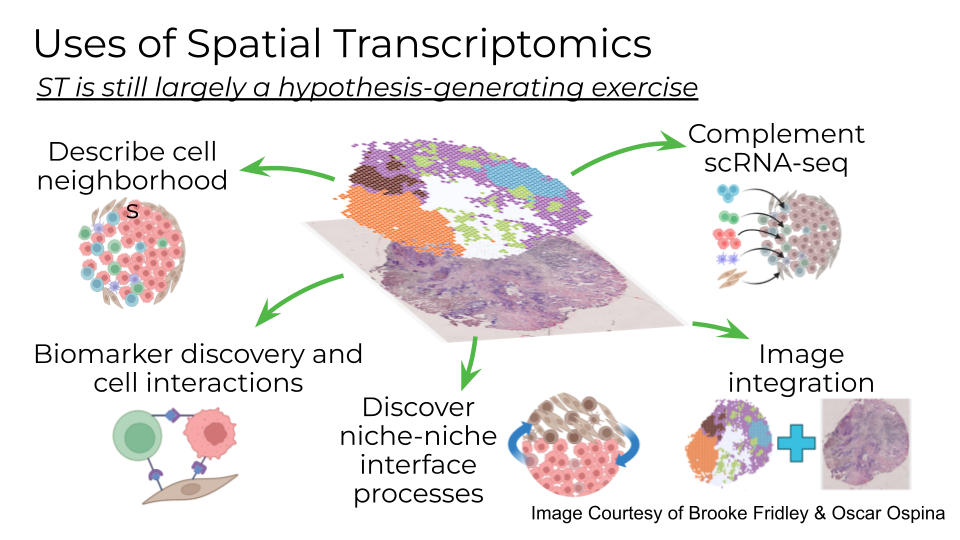
The types of technology used to generate spatial transcriptomics data are generally categorized as or and lie across two inverse spectra: Molecular and Cellular Resolution. Sequencing-based technologies typically provide a whole view (broad molecular resolution), but not at a single-cell or sub-cellular resolution – instead at a Region of Interest (ROI) or resolution (where a “spot” is made up of tens to hundreds of cells.) In other words, sequencing-based technologies provide low precision / cellular resolution. In contrast, image-based technologies typically provide data for a panel-based subset or a limited selection of the transcriptome (in other words, narrow molecular resolution). However, image-based technologies provide data at a single-cell or even sub-cellular resolution (high precision cellular resolution). Due to this, researchers may first collect spatially-resolved gene expression data with a sequencing-based technology for initial hypothesis generation to identify a specific region of interest in a tissue or specific genes to probe where greater cellular resolution would be beneficial, and then follow-up with generating a higher cellular resolution spatially-resolved dataset using an image-based technology. Kwon et al. (2026) is a study posted to bioRxiv recently where the researchers did just this: first using a sequencing-based technology followed by an image-based technology as complementary spatial transcriptomic approaches to study the impacts of within the , microenvironments, and cell types of from the human .
![Visium and Xenium provide spatially resolved mRNA expression at different molecular and cellular scales. The molecular resolution of Visium, a sequencing-based technology is high because it gives a view of the whole transcriptome. The Molecular resolution of Xenium, an image-based technology, is low because it gives a view of a only a limited number of genes from a specified panel. On the other hand, the cellular resolution of Visium is lower than that of Xenium. Visium does not provide a single-cell resolution. Rather its spot-level resolution can have multiple cells represented. Xenium provides single-cell or even sub-cellular resolution.](index_files/figure-html//1jRNbuvQSjI4cZKAOStDUFAgAoFFBp8zIICCiG-1RZLk_h7553ddbe789f499c_0_65.png)
| Technology category | Example | Molecular Resolution | Cellular resolution |
|---|---|---|---|
| Sequencing-based | , GeoMx, Slide-seq | Broad; whole transcriptome | Low; Near single-cell but typically spots with tens to hundreds of cells represented |
| Image-based | , CosMx, MERFISH | Limited; panel of specific genes | High; single- or sub-cellular resolution |
Lim et al. (2025) provides a deeper discussion comparing the various technologies available to generate Spatial Transcriptomics datasets.
There are several tools available to analyze spatial transcriptomics data. Some are command line tools or packages you can load while working with Python or R. Others are more user-friendly tools which point and click interfaces or GUIs. Some of these point and click tools require a license to use while others are free to use. Some of the command line tools / packages are analysis suites while others perform specific tasks such as normalization or downstream analyses. The ITN course “Choosing Genomics Tools” provides a thorough discussion of the available tools. One tool, spatialGE can be used as either an R package (providing functions for a full range of tasks) (Oscar E. Ospina et al. 2022) or as a point and click interface that is free to use (Oscar E. Ospina et al. 2025). In this way, spatialGE is flexible, meeting users where they are at whether they are comfortable programming or not. Though this case study will focus on working with Xenium data for data import, quality control, normalization, and visualization tasks, spatialGE can be used to work with ST data from a variety of technologies and for downstream applications.
![Diagram showing that tools to work with spatial transcriptomics data are either command line tools and software packages or user friendly point and click tools. Software packages may provide full analysis suites or just task specific functions. They may work with R or Python. The user friendly point and click tools are either licensed requiring users to pay to use them or free to use. spatial GE is both an R package and a free to use point and click tool providing users with an analysis suite of functions and meeting users where they are whether they are comfortable programming or not.](index_files/figure-html//1jRNbuvQSjI4cZKAOStDUFAgAoFFBp8zIICCiG-1RZLk_h5d1240d022ec01ab_0_104.png)
In this case study, we will use spatialGE to work with Xenium data from SCZ and postmortem dlPFC samples, specifically focusing on:
- What data is produced by and available from a Xenium experiment
- How to import the data
- How to inspect and work with a
spatialGEobject that stores the data - How to perform quality control and filter out low quality or irrelevant data
- How to transform or normalize the data to account for technical artifacts
- How to create to visualize spatial patterns of gene expression
- How to annotate cells within the dataset, exploring cell type specific spatial patterns of gene expression
Downstream analyses for more global and statistical summaries of spatial patterns will be introduced but not shown in-depth within this case study.
Motivating resources:
This case study is motivated by these guiding resources to discuss the following topics:
Kwon, Sang Ho, Boyi Guo, Cindy Fang, Madhavi Tippani, Svitlana V. Bach, Ryan A. Miller, Sarah E. Maguire, et al. 2026. “Mapping Spatially Organized Molecular and Genetic Signatures of Schizophrenia Across Multiple Scales in Human Prefrontal Cortex,” February, 2026.02.16.706214. https://doi.org/10.64898/2026.02.16.706214.
Lim, Hyun Ju, Ye Wang, Anton Buzdin, and Xinmin Li. 2025. “A Practical Guide for Choosing an Optimal Spatial Transcriptomics Technology from Seven Major Commercially Available Options.” BMC Genomics 26 (January): 47. https://doi.org/10.1186/s12864-025-11235-3.
Ospina, Oscar E, Christopher M Wilson, Alex C Soupir, Anders Berglund, Inna Smalley, Kenneth Y Tsai, and Brooke L Fridley. 2022. “spatialGE: Quantification and Visualization of the Tumor Microenvironment Heterogeneity Using Spatial Transcriptomics.” Bioinformatics 38 (9): 2645–47. https://doi.org/10.1093/bioinformatics/btac145.
Main Question
Our main question(s)
- How does the choice of technology/platform for generating spatially-resolved gene expression data impact the data that I will have to work with?
- What about my data should I consider during quality control in order to set filtering criteria?
- How will my choice of normalization methods impact my results?
- How do gene expression patterns compare for specific genes in dorsal prefrontal cortex tissue samples from cases with diagnosed schizophrenia to those from neurotypical cases?
Learning Objectives
In this case study, we will explore {}.
This case study will particularly focus on {}.
The skills, methods, and concepts that students will be familiar with by the end of this case study are:
Data Science/Bioinformatics Learning Objectives:
- {FILL IN}
- {FILL IN}
- {FILL IN}
Biological/Topical Learning Objectives:
- {FILL IN}
- {FILL IN}
- {FILL IN}
Context
What is schizophrenia?
What is the dorsolateral prefrontal cortex?
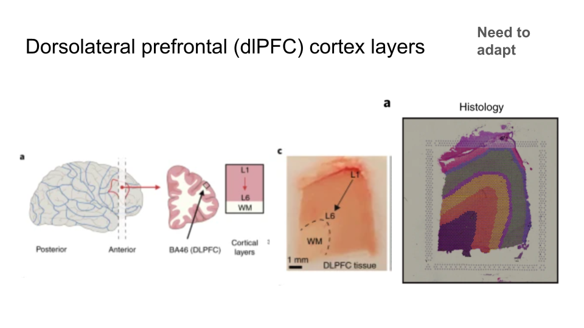
Why collect samples from the dlPFC?
Why is spatially-resolved gene expression data necessary?
Differential expression: abundance
Explain Volcano plots
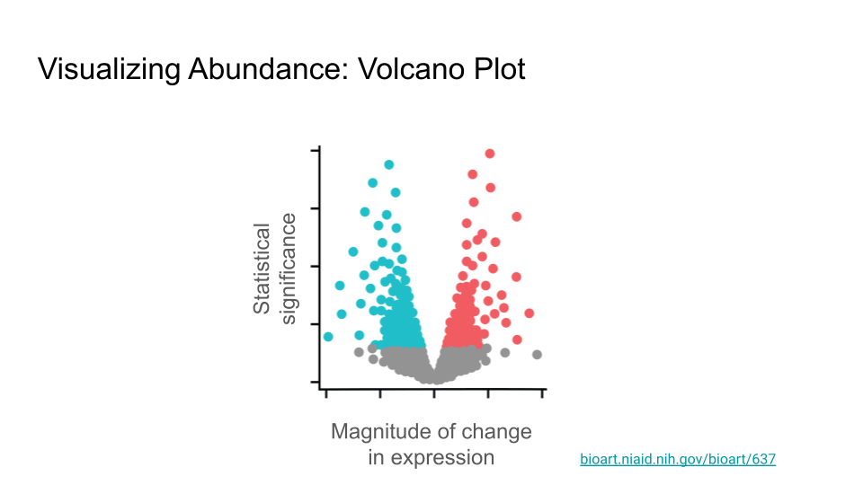
Differential expression: cell type
Explain Violin plots
Differential expression: spatial distribution
Explain Quilt plots
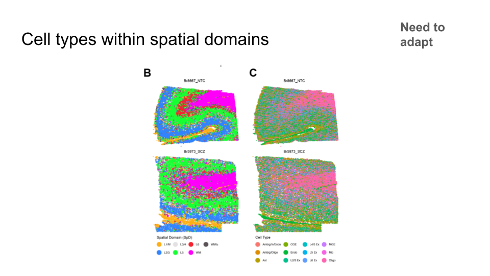
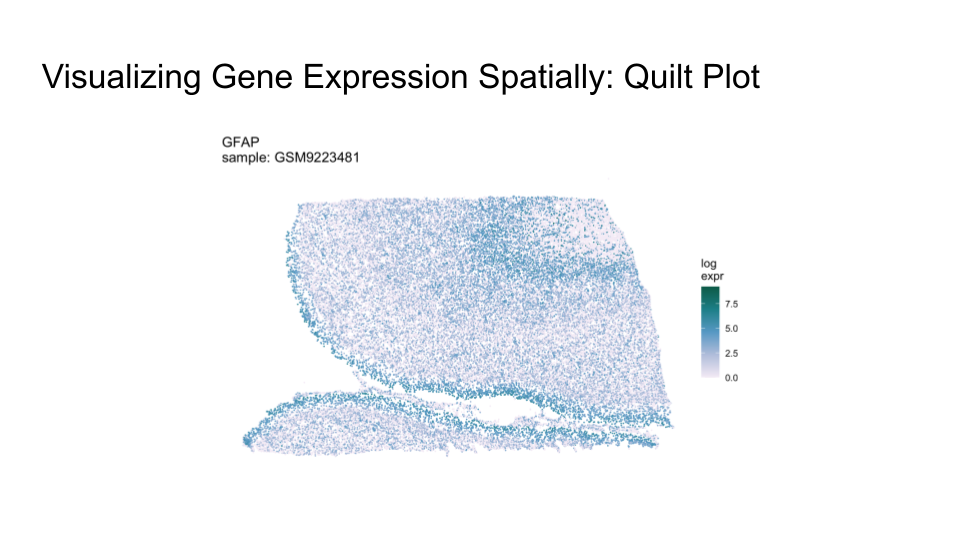
What analysis steps need to happen after data collection?
Introduction to Xenium data
Before we start to work with the Spatial Transcriptomics data from this study, we will provide an introduction previewing some of the specifics of Xenium data: how it’s generated, what is produced or generally what you can expect working with it, and any special considerations to keep in mind when working with Xenium data. Some of these topics will be discussed in more detail throughout the case study.
Data generation
Xenium is an image-based spatial transcriptomics platform. Tissue samples are either fresh frozen (FF) or formalin-fixed paraffin-embedded (FFPE). Each of these options has its own specific protocols necessary for further sample preparation.
Sample preparation
Sectioning and complementary methods
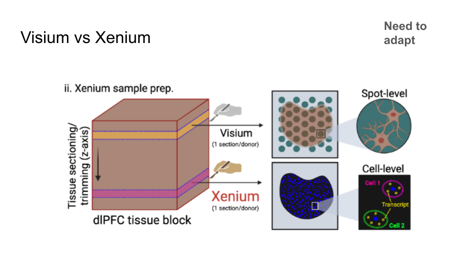
Mention that domains from one sample section don’t directly align with another section and there are algorithms to liftover.
Xenium Analyzer steps
Cell segmentation for v1 utilizes DAPI for nucleus and an isotropic nuclear expansion algorithm to approximate the cell boundaries. An alternative approach (not used for this study) utilizes multiple stains and for cell boundaries and segments using those stains rather than expanding the nucleus.
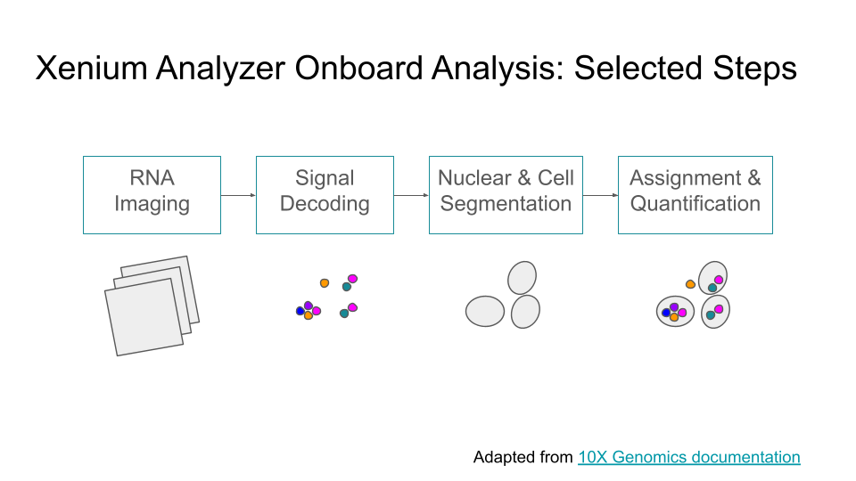
Quality control
Describe quality control that Xenium does
Data products
https://www.10xgenomics.com/support/software/xenium-onboard-analysis/latest/analysis/xoa-output-at-a-glance#output-bundle-files
Summary
In summary, Xenium technology utilizes a panel of gene-specific probes to assay the spatially-resolved expression for a targeted set of genes at a single-cell or sub-cellular resolution within tissue samples. Samples for Xenium analysis are prepared from either fresh frozen (FF) or formalin-fixed paraffin-embedded (FFPE) tissue blocks. While preparation protocols differ by sample type (e.g, FF or FFPE), generally tissue sections are taken from the tissue block, mounted on specialized slides, and undergo chemical treatments for fixation, permeabilization, probe hybridization, and staining. Following sample preparation, imaging cycles are performed using a Xenium Analyzer. The Xenium Analyzer’s onboard software performs nuclear and cellular segmentation to approximate boundaries between cells and assign observed transcripts to individual cells. Xenium platforms use automated real-time quality control to remove noise and lower quality data. Researchers receive a variety of data including data that reports on the localization of cells, nuclei, and transcripts, observed counts for the transcripts, and morphology images for the tissue sample sections.
What are the data?
Data context
The data used in this case study are from Kwon et al. (2026) which collected dorsolateral prefrontal cortex (dlPFC) samples postmortem from neurotypical donors and donors with diagnosed schizophrenia. Samples were fresh frozen following collection prior to spatial transcriptomics dataset generation. Kwon et al. (2026) generated data using both the Visium and Xenium platforms, using analysis of the Visium data to inform what Xenium data to collect. Visium data was generated for all donors as explained in Supplementary Table 1 while Xenium data was generated for a subset of these donors. For donors where both Visium and Xenium datasets were generated, the tissue samples originated from the same fresh frozen tissue block or source for each donor, but the samples themselves (used to generate the data for each platform) are from adjacent tissue sections of each block. Since each platform requires its own slide mounting and chemical reagents, typically serial tissue sectioning is used to yield adjacent / comparable tissue samples that can be used for multiple experiments with different technologies.
Postmortem tissue samples from 24 donors were used to generate Xenium data. Twelve of those donors had been diagnosed with schizophrenia (denoted by SCZ within the study and this case study) while the other 12 were neurotypical (denoted by NTC within the study and CTRL within this case study).
This case study will work solely with the Xenium data, using only 6 of the 24 samples (3 CTRL and 3 SCZ).
We will work with a reduced number of samples in order to keep the size of the data more manageable. It’s important, especially in studies involving visualization of tissue sections, to work with multiple tissue sections per case (e.g., CTRL vs SCZ) to make sure that signal is not an artifact of how that sample was processed or cut and instead is generalizable across tissue sections/samples.
Matching sample demographics
Typically studies match donor demographics between case cohorts (e.g., having comparable average ages or number of individuals of each sex). Kwon et al. (2026) does this for all of the samples overall as well as the subset of samples that were processed with the Xenium platform, reporting the information in Supplementary Table 1.
The Xenium spatial transcriptomics data represents cellular mRNA counts for panel-targeted genes, mapping the transcripts from those genes to the cellular spatial locations in the tissue (where the probes bound, signifying expression). As such there are 3 main data types or files that we will be working with.
- Tissue/sample metadata
- Spatial coordinates of cells in the sample
- mRNA counts of panel-targeted transcripts for each cell
The panel genes
The panel targets 300 genes using probes designed specifically to target transcripts of these genes:
| Categories of gene used for the panel | Source | Number of genes |
|---|---|---|
| Differentially expressed genes | Visium data analysis in Kwon et al. (2026) | 168 |
| dPFC Layer marker genes | Huuki-Myers et al. (2024) | 85 |
| Schizophrenia associated genes | Various literature/GWAS studies (see Supplementary Table 8) | 18 |
| Cell type marker genes | Huuki-Myers et al. (2024) | 35 |
Six genes (A2M, MAPK3, PLP1, RCAN2, SERPINA3, SOX2-OT) overlap multiple categories within the panel, leading to a total of 300 unique genes represented in the panel. An additional 68 genes already in the panel were also marked as cell type marker genes (beyond the original 35) following further literature review. This can be explored in Supplementary Table 8.
Specific Data Files
Specific data files that we will work with in this case study include files for each of the aspects of the Xenium data:
- Sample metadata
- Spatial coordinates
- mRNA counts
We will be fetching the Xenium generated data (spatial coordinates and mRNA counts) from GEO in the Data Import section of the case study. The project’s GEO accession number for all of the Xenium data is GSE307404. However, each sample has its own specific GEO accession number, which we will use to fetch the data for our reduced number of samples rather than fetching data for all 24 samples.
Previewing available files
We can preview the data files that are available from Xenium for this project using the getGEO() and getGEOSuppFiles() functions from the GEOquery package.
library(GEOquery)gse <- GEOquery::getGEO("GSE307404", GSEMatrix = TRUE)Found 1 file(s)GSE307404_series_matrix.txt.gzgse$GSE307404_series_matrix.txt.gz
ExpressionSet (storageMode: lockedEnvironment)
assayData: 0 features, 24 samples
element names: exprs
protocolData: none
phenoData
sampleNames: GSM9223468 GSM9223469 ... GSM9223491 (24 total)
varLabels: title geo_accession ... tissue:ch1 (38 total)
varMetadata: labelDescription
featureData: none
experimentData: use 'experimentData(object)'
Annotation: GPL33762 From this, we see that there are 24 samples total as part of this project.
Using one sample name from that output, we can what files each sample has.
This let’s us grab a single GEO accession number for a sample from the getGEO results:
pData(gse[[1]])$geo_accession[1][1] "GSM9223468"Then we use that together with the getGEOSuppFiles() function to list the filenames ($fname) deposited for that sample:
GEOquery::getGEOSuppFiles(pData(gse[[1]])$geo_accession[1], fetch_files = FALSE)$fname[1] "GSM9223468_Br2039-cell_boundaries.csv.gz"
[2] "GSM9223468_Br2039-cell_feature_matrix.h5"
[3] "GSM9223468_Br2039-cells.parquet.gz"
[4] "GSM9223468_Br2039-morphology.ome.tif.gz"
[5] "GSM9223468_Br2039-nucleus_boundaries.csv.gz"
[6] "GSM9223468_Br2039-transcripts.zarr.zip" The -cells.parquet and -cell_feature_matrix.h5 files are the important files going forward.
Sample metadata
The sample metadata file that we will be working with combines the metadata from Supplementary Table 1 with the GEO accession number for each sample. When using secondary data, it is common for sample metadata to be available in supplementary information. You may need to combine multiple tables of information.
Expansion of metadata from Supplementary Table 1
We previously created a file for the Xenium samples which maps each sample’s GEO Accession Number to the Brain Number ID (geo_to_spatial_samples.csv) and united this with the data from Supplementary Table 1 because we will need the GEO accession number in order to fetch the spatial coordaintes and mRNA counts for each sample. However, the sample metadata file provided in the supplementary table only includes the Brain Number ID (Br####).
The files for this project follow the naming pattern of {sample specific GEO accession number}_{sample Brain Number ID}-{file type specific pattern},
- Listed files from GEO accession number GSE307404 (all Xenium data from this project) with
list.files()function for one of the file types. - Used
stringr::str_replace()function to the specific pattern for that file type with an empty string (""), removing all but the GEO accession number and Brain Number ID (separated by an underscore) for each sample. - Used
strsplit("_")function to separate the GEO accession number and Brain Number ID for each string. - Used
do.call(rbind.data.frame, .)to create a data frame with the sample GEO accession numbers in the first column and their associated Brain Number IDs in the second column. - Set the column names.
- Saved to a
.csvfile.
Alternatively, we could create this map using the title and geo_accession columns from the pData(gse[[1]]) output we saw earlier.
The combined data from Supplementary Table 1 and the GEO to Brain Number ID map is contained in the file spatial_samples.csv. The spatial_samples.csv file is a file with a header (column names) where values are separated by a comma (.csv). The contents of each column are explained in the following table:
| Variable | Details |
|---|---|
BrainNumberID |
An identifier representing which donor brain the sample originates from. Follows the pattern “Br####” |
Race |
Demographic information about donors. All samples are “CAUC” for caucasian. |
Sex |
Demographic information about donors. “M” for male or “F” for female. |
Age |
Demographic information about donors. Number / decimal representing age of donor in years. |
RIN |
RNA Integrity Number. Number / decimal representing the quality of the fresh frozen block tissue samples. Generally, Visium and Xenium recommend brain tissues have an observed RIN of 4+ (though older resources may recommend 7+) (Grases and Porta-Pardo (2026)). Lower RINs may lead to reduced sensitivity. |
PMI |
Postemortem Interval. Number / decimal representing the time interval between the donor’s death and the sample extraction and freezing from that donor. Typically reported in hours, but could be reported in days or another measurement of time. To promote greater fresh frozen block tissue quality, generally it is recommended to minimize the post mortem interval |
PrimaryDx |
Demographic information about donors representing the primary diagnosis. “Control” for neurotypical donors and “Schizophrenia” for donors diagnosed with schizophrenia. |
Visium |
“YES” or “NO” for whether Visium data was generated for this sample. All samples are “YES”. |
Xenium |
“YES” or “NO” for whether Xenium data was generated for this sample. |
GEO |
The GEO accession number for samples with Xenium data. NA for samples with only Visium data. |
The demographic information is useful for data exploration. We will primarily be using the BrainNumberID, PrimaryDx, Xenium, and GEO variables.
- The
XeniumandGEOvariables will be used to select a subset of samples of fetch the data for those samples from GEO. - The
BrainNumberIDandPrimaryDxvariables will be used to create informative sample IDs so that we can more easily observe the case (e.g., CTRL or SCZ) of samples throughout our analysis.
Spatial coordinates
Classically, -cells.parquet files are used to store the spatial coordinates of the cells, specifically the locations (or centers of the cells).
The .parquet file type is a departure from the normal way we would expect data to be stored. Often our file types (e.g., .csv) store data row by row with each row containing a complete record or set of related information about a specific sample, timepoint, etc. Instead, .parquet files store data column-by-column. This leads to more efficient storage and querying of large data files.
Additional information provided in this file is described by 10X genomics.
If -cells.parquet files are not available
Sometimes when you are using publicly available data rather than generating new datasets yourself, files that you may expect are not deposited or archived.
If .parquet files are not available, first check if cells.csv.gz is available as this is an alternate format of the typical file. If not, you can use a different Xenium output to calculate the centroids typically stored in the cells.parquet files. This will be explored further within a click to expand section in the Data Import section of the case study, but this alternate file type is also introduced here:
-cell_boundaries.csv.gz also stores spatial coordinates. Specifically these files have many rows per cell describing each vertex that is part of a polygon, where the polygon edges represent the borders of the cell. We can find the centroid of each cell by considering all of these polygon coordinates together. The contents of this file are the result of the nucleus segmentation algorithm that expands the nuclei DAPI-stained boundaries to determine cell boundaries.
| Variable | Details |
|---|---|
cell_id |
A cell ID corresponding to the barcode variable in the mRNA counts data. Multiple rows will have the same cell_id value in these files. |
vertex_x |
The x-coordinate of a vertex between two of the edges of the polygon representing that cell. |
vertex_y |
The corresponding y-coordinate of that vertex between two of the edges of the polygon representing that cell. |
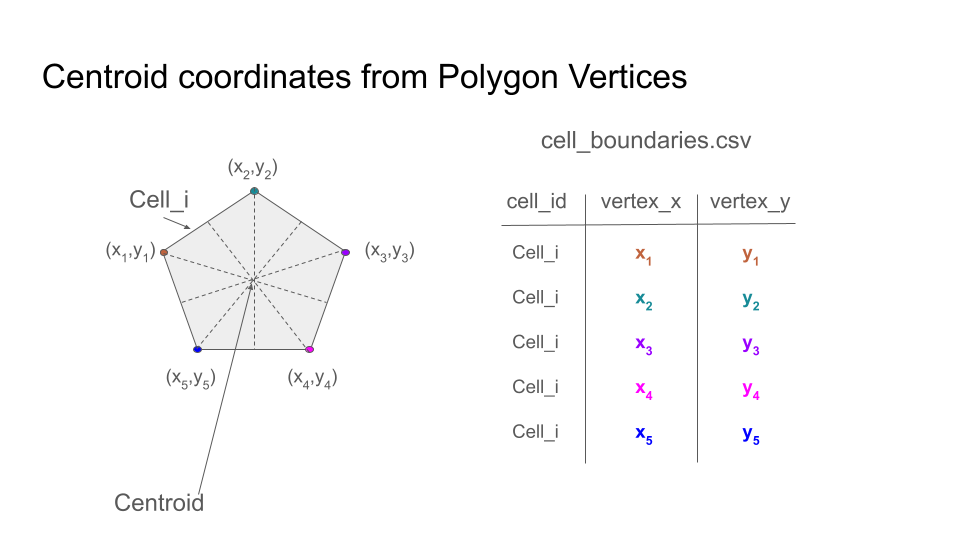
Another file output that Xenium provides is nucleus_boundaries. This file is not sufficient for cell spatial coordinates because it’s only providing the boundaries of the nucleus rather than the cells. Nuclear positioning varies across cells, so you can’t make an assumption about the center of cell if you have coordinates for the nucleus.
These file types are described in greater detail by 10X genomics.
This case study will use the arrow package to work with -cells.parquet files for the spatial coordinates data.
mRNA counts
The data for the mRNA counts that we’ll be using is stored in -cell_feature_matrix.h5 files. This file type efficiently stores large amounts of data that are typically represented by large matrices (n rows for genes * m columns for cells with counts for a given gene in a specific cell stored at each intersection). Instead, .h5 files use nested named lists to store the data. Of important note, only non-zero counts are stored as well as the indices where those counts would be located in a matrix (e.g., indices for which genes and cell IDs they would correspond with). These nested named lists can be used to reconstruct the matrix structure of the data.
Note that “features” is an alternative word for genes in this field and will be used interchangeably throughout this case study.
We can use either the rhdf5::h5dump() function or the rhdf5::h5ls() function to get a look at the nested lists (and their names) for this data.
For example:
rhdf5::h5dump(here::here("data/raw/GSM9223477/GSM9223477_Br5314-cell_feature_matrix.h5"), load = FALSE)$matrix
$matrix$barcodes
group name otype dclass dim
1 / barcodes H5I_DATASET STRING 48542
$matrix$data
group name otype dclass dim
1 / data H5I_DATASET INTEGER 4735170
$matrix$features
$matrix$features$`_all_tag_keys`
group name otype dclass dim
1 / _all_tag_keys H5I_DATASET STRING 1
$matrix$features$feature_type
group name otype dclass dim
1 / feature_type H5I_DATASET STRING 541
$matrix$features$genome
group name otype dclass dim
1 / genome H5I_DATASET STRING 541
$matrix$features$id
group name otype dclass dim
1 / id H5I_DATASET STRING 541
$matrix$features$name
group name otype dclass dim
1 / name H5I_DATASET STRING 541
$matrix$indices
group name otype dclass dim
1 / indices H5I_DATASET INTEGER 4735170
$matrix$indptr
group name otype dclass dim
1 / indptr H5I_DATASET INTEGER 48543
$matrix$shape
group name otype dclass dim
1 / shape H5I_DATASET INTEGER 2rhdf5::h5ls(here::here("data/raw/GSM9223477/GSM9223477_Br5314-cell_feature_matrix.h5")) group name otype dclass dim
0 / matrix H5I_GROUP
1 /matrix barcodes H5I_DATASET STRING 48542
2 /matrix data H5I_DATASET INTEGER 4735170
3 /matrix features H5I_GROUP
4 /matrix/features _all_tag_keys H5I_DATASET STRING 1
5 /matrix/features feature_type H5I_DATASET STRING 541
6 /matrix/features genome H5I_DATASET STRING 541
7 /matrix/features id H5I_DATASET STRING 541
8 /matrix/features name H5I_DATASET STRING 541
9 /matrix indices H5I_DATASET INTEGER 4735170
10 /matrix indptr H5I_DATASET INTEGER 48543
11 /matrix shape H5I_DATASET INTEGER 2$matrixis the top list name$barcodes– nested list undermatrix; the cell IDs$data– nested list undermatrix; the non-zero counts$features– nested list undermatrix; has its own nested subparts relating to the rows/genes$_all_tag_keys– “genome” for our data$feature_type– specifies “Gene Expression” for the panel genes or Xenium QC probes/codewords such as negative control probe, negative control codeword, or unassigned codeword$genome– unknown for our data$id– gene ID or control/probe ID for elements of$data$name– gene name or control/probe name for elements of$data
$indices– nested list undermatrix; zero-based row index for non-zero values found in$data(iequivalent forMatrix::sparseMatrix()function used in the Data Import section of the case study)$indptr– nested list undermatrix; zero-based index for$dataand$indiceswhere columns start (pequivalent ofMatrix::sparseMatrix()function in the Data Import section of the case study)$shape– nested list undermatrix; dimensions of the data (number of genes or features X number of cells).- Note that the number of cells >>>>> number of genes (Xenium panel with limited number of genes)
- Note that the product of the dimensions will be greater than the length of
$datasince this data format is representing non-zero counts only and therefore is a sparse representation
The most important parts of this file for us will be barcodes, data, features$name, indices, indptr, and shape. Each of these will be used as we build sparse matrices from the .h5 formatted data.
For more information about the .h5 file format, consider this 10X Genomics resource.
If -cells_feature_matrix.h5 files are not available
Alternative formats for mRNA counts that may be provided as Xenium outputs (MEX or Zarr) are discussed here with specific explanations for Zarr files here. Tools such as Rarr, zarr, XeniumIO, or Seurat may be useful for working with these file types.
This case study will use the rhdf5 and Matrix packages to work with cell_feature_matrix.h5 files for the mRNA counts data.
General note on variety of Xenium outputs
Xenium produces a variety of output files. Not all of these will be shared / deposited into an archive. While some file types may be more usual or preferred by some in the field (e.g., because it’s more efficient to store or it’s a file type they are more comfortable with), there doesn’t appear to be a specific industry standard or accepted practice on files to always use. For example, morphology images (likely stained with DAPI to mark nuclei) are often output but are not always shared. An output may be shared as a .csv file instead of a .parquet file or as a Zarr file instead of an .h5 file. It may seem like you can’t proceed if you don’t see the file types you expect, but it’s not necessarily a lost cause. Make sure that you understand:
- What files are available and what they represent about the data. You may be able to use an alternate file type for a specific aspect of the data (e.g., spatial coordiantes).
- What file types your downstream tools expect or can work with.
- If you can use a file type that you have in place of a file type that you or a downstream tool usually expects, or at least wrangle it to meet your needs.
- What (if any) specialized packages are necessary to read in and work with certain file types.
Reproducibility Considerations
If you need a specific file but don’t see it in an archive, contact the study personnel and ask if that file can be added. Data reuse benefits the scientific community and promotes reproducible, robust, and generalizable scientific discovery.
Limitations
There are some important considerations regarding this data analysis to keep in mind:
- {FILL IN}
- {FILL IN}
Ethical Considerations
There are some important ethical considerations when working with data relating to this case study’s main questions.
- {FILL IN}
- {FILL IN}
Packages and Setup
We will begin by loading the packages that we will need:
library(here)
library(tidyverse)
library(readr)
library(dplyr)
library(sf)
library(arrow)
library(R.utils)
library(rhdf5)
library(Matrix)
library(spatialGE)
library(ggpubr)
library(patchwork)
library(colorblindr)| Package | Use |
|---|---|
| here | Constructs paths within project |
| tidyverse | Data wrangling |
| readr | Reading in data |
| dplyr | Data wrangling |
| sf | Enables storing and working with spatial data |
| rhdf5 | Reading and working with H5 files |
| Matrix | Working with sparse and dense matrices |
| spatialGE | Package for QC, normalization, filtering, visualization, and analysis of spatially-resolved gene expression data |
| ggpubr | Further functions to customize and prepare ggplot2 plots for publication |
The first time we use a function, we will use the :: to indicate which package we are using. Unless we have overlapping function names, this is not necessary, but we will include it here to be informative about where the functions we will use come from.
Data Import
What spatialGE is looking for
spatialGE provides the user flexibility in how they import their data. Users can either provide file paths or they can provide named lists with each list containing data frames for each sample. To better understand the data we have and are working with, we will provide named lists of data frames for both the spatial coordinates and the mRNA/feature counts.
Each named list will use the same sample names to show which data goes with which sample. Each data frame within a given named list will have similar structure, but different underlying data points specific to that sample.
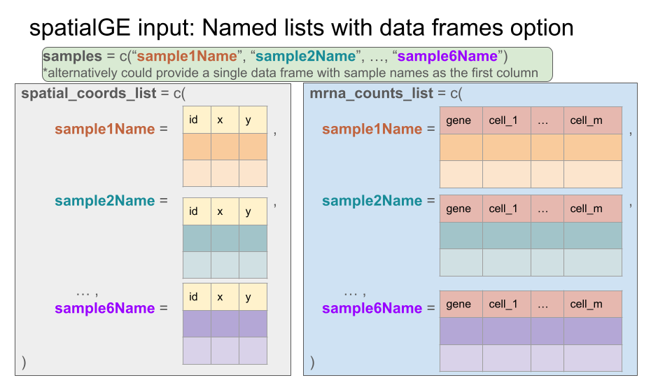
Spatial coordinates
For spatial coordinates, each data frame should have:
- 3 columns
- Cell IDs
- X coordinate for the center of the cell
- Y coordiante for the center of the cell
- One row per each unique cell ID; let’s say we have
mcells
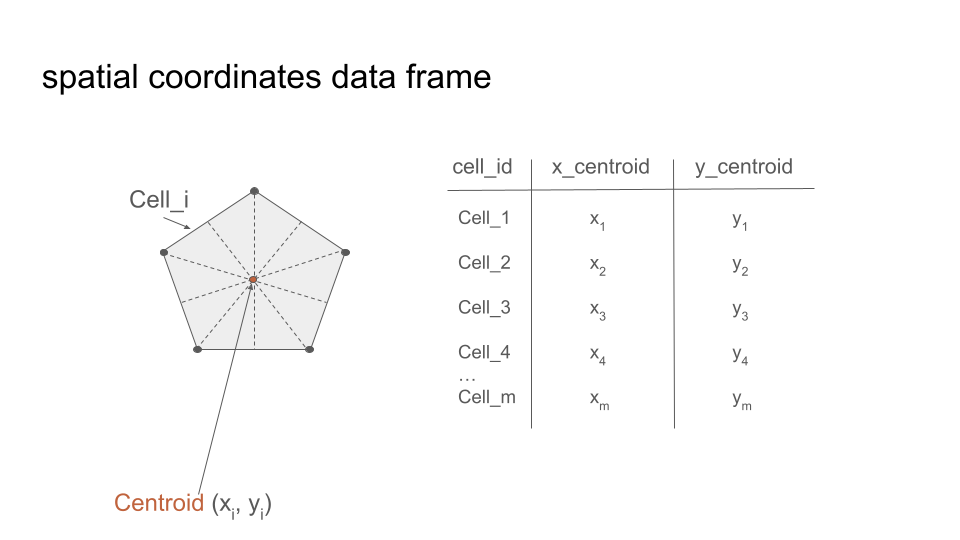
mRNA counts
For the mRNA counts, each data frame should have:
- n rows
- 1 for each feature
- let’s say we have n features.
- (m+1) columns
- 1 for each cell
- For our spatial coordinates, we said we had
mcells - Add 1 because the first column will list the feature/gene names
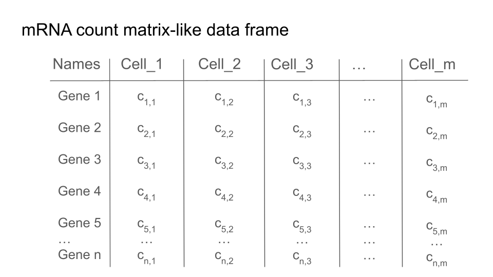
Recall that both of these (spatial coordinates and mRNA counts data) will be stored in separate named lists where the names correspond to samples, and each sample has its own data frame.
Sample metadata
spatialGE also requires sample information. We will provide sample names / metadata where the sample names match those used in the named lists. The sample names will be in the first column of the samples metadata data frame (though they could also be passed as just a vector of names).
Subsetting samples
We want to subset 6 samples (3 for each diagnosis) from the larger set of samples so that we still have multiple samples to compare, but aren’t working with every possible sample as that would require a lot of memory and storage (as explained in the What are the data? section of the case study).
set.seed(567)
spatial_sample_info <- readr::read_csv(here::here("data/raw/spatial_samples.csv"))
spatial_sample_info <- spatial_sample_info %>%
dplyr::filter(Xenium == "YES")
#3 NTC samples
ntc_samples <- unname(sample(unlist(spatial_sample_info[which(spatial_sample_info$PrimaryDx == "Control"), "GEO"]), 3))
#3 SCZ samples
scz_samples <- unname(sample(unlist(spatial_sample_info[which(spatial_sample_info$PrimaryDx == "Schizophrenia"), "GEO"]), 3))
samples <- c(scz_samples, ntc_samples)
samples[1] "GSM9223484" "GSM9223483" "GSM9223479" "GSM9223485" "GSM9223477"
[6] "GSM9223481"What is this code doing?
- We set the random seed.
- We read in the sample metadata file.
- We filter the data frame to include only samples used for Xenium data generation.
- We subselect 3 random CTRL samples from all samples where the primary diagnosis is “Control” (
PrimaryDx == "Control") using thesample()function. - We subselect 3 random SCZ samples from all samples where the primary diagnosis is instead “Schizophrenia”, again using the
sample()function. - We make a vector combining those 6 sample IDs.
Reproducibility considerations
Any steps in an analysis that rely on randomness or stochasticity are not reproducible later or by others unless a random seed is set prior to the running those steps (and that specific random seed is then used every time before running those steps).
What are the 3 samples subset from the larger cohort for each condition?
- NTC Samples:
- 2 females
- 1 male
- SCZ Samples:
- all 3 females
spatial_sample_info[spatial_sample_info$GEO %in% samples,]# A tibble: 6 × 10
BrainNumberID Race Sex Age RIN PMI PrimaryDx Visium Xenium GEO
<chr> <chr> <chr> <dbl> <dbl> <dbl> <chr> <chr> <chr> <chr>
1 Br5314 CAUC F 48.7 8 41.5 Control YES YES GSM92…
2 Br8433 CAUC M 48.0 6.8 14 Control YES YES GSM92…
3 Br5746 CAUC F 52.0 7.9 38.5 Schizophrenia YES YES GSM92…
4 Br5973 CAUC F 61.4 8.5 22 Schizophrenia YES YES GSM92…
5 Br1139 CAUC F 44.9 8.7 44 Schizophrenia YES YES GSM92…
6 Br8667 CAUC F 37.3 6.9 13.5 Control YES YES GSM92…Fetching GEO data for these samples
This lapply will loop through the samples vector and fetch the following files for each sample from GEO using the getGEOSuppFiles() function from the GEOquery package:
-cell_boundaries.csv.gzfor computing spatial coordinates (a side quest explored later in a click to expand section)cells.parquet.gzfor spatial coordinates-cell_feature_matrix.h5for mRNA counts
How does lapply or “loop”ing work?
A function like the getGEOSuppFiles() function from the GEOquery package accepts inputs and performs specified steps with that input, providing some output following those steps.
When you use a loop to call a function for a set of inputs, the loop provides each input individually to the function. For each individual input, the function performs its specified steps and produces an output. Then the loop gives the function the next input and the process is repeated until there are no more inputs to give the function.

We’ll use an example with lab pets to show this in a more concrete way.
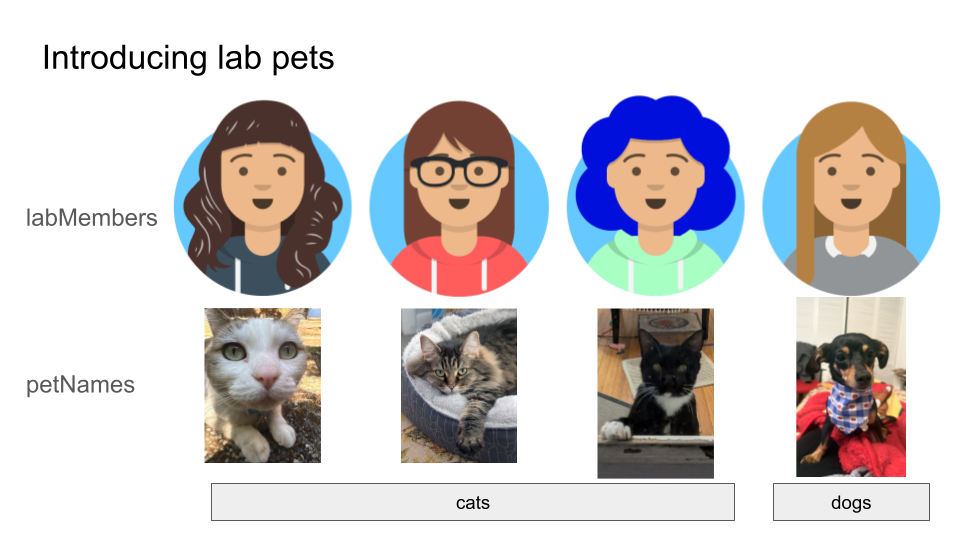
We could specify a loop (that doesn’t use or call a function yet), but just goes through each of the lab members who has a cat and outputs their cat’s name. Outside of the loop, we could specify the dog’s name for the fourth lab member who has a dog, not a cat. Because that last part is happening outside of the loop, it is only output once rather than being output every time we go through the loop. And the number of times we go through the loop relates to the number of inputs we’re looping through (in this case 3 because there are 3 lab members with cats).
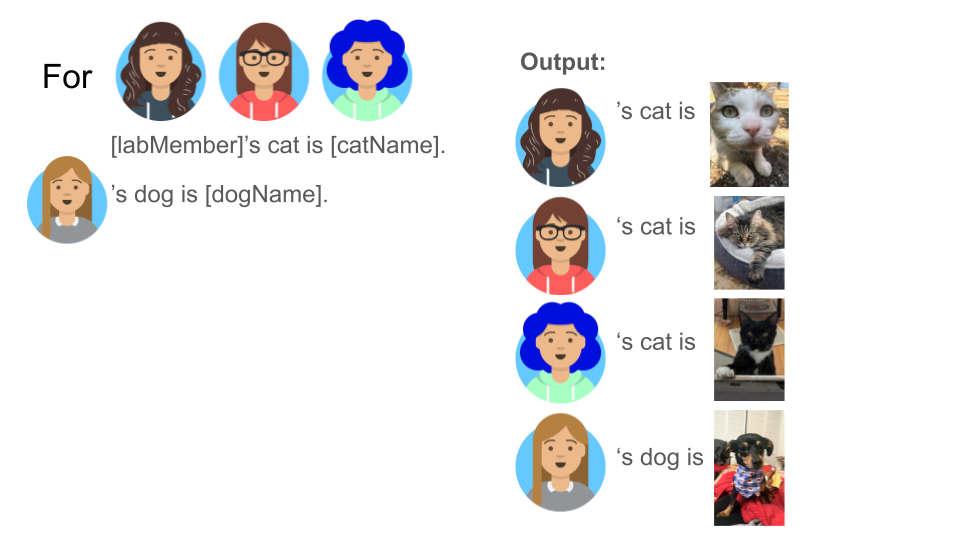
We could write a function that generalizes that process, specifically reporting the lab member and who their pet is, even specifying whether that pet is a dog or a cat, after evaluating the input. Functions are especially useful in cases like this where there is a process that has related tasks with specifiable, but slightly different behavior dependent on how an input is evaluated.

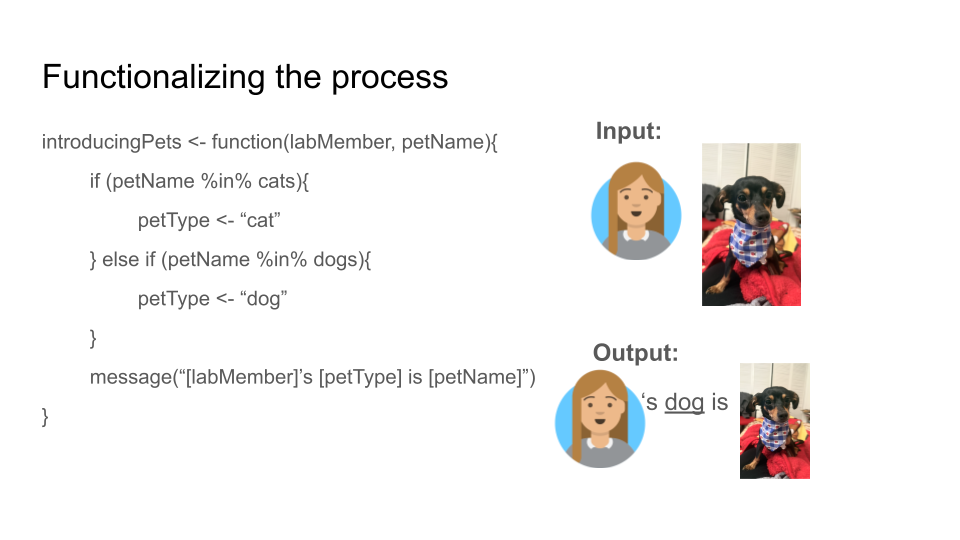
Notice that we have to explicitly call this function for every lab member that we want to use it for. We would have to call the function four times, one for each lab member. Generally, we want to reduce redundancy in our code, so it might make sense to use a loop to loop through our data and call the function multiple times that way.
To reduce redundancy, we could call the function with a for loop. Notice because of how we defined our function, the lab member with a dog is part of the for loop now, instead of outside of it!
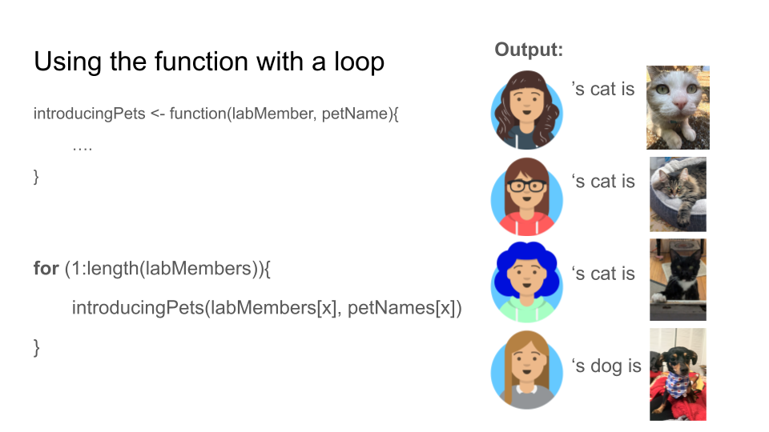
lapply is another function that provides the functionality of a loop, meant specifically to work with functions. One intricacy of lapply is that the output from calling the function for a set of a items is returned in a list. (That’s what the l in lapply stands for: “list”.) Given that we’ve said that we want our spatialGE inputs to be in named lists, lapply will be helpful for us in constructing those inputs down the line.
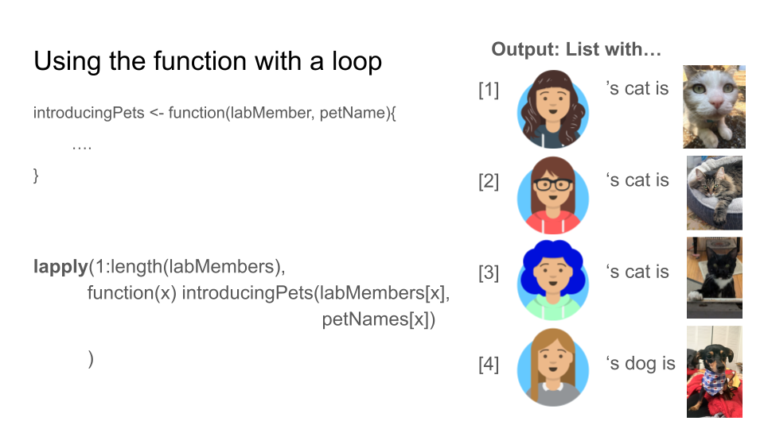
How to construct an lapply statement
lapply statements have 2 parts.
- Some iterable object such as a list or vector. This may be:
- a named list
- a vector with character elements
- a vector of indices (
1:length(some_vector)).
- Some function to apply for each element of the iterable object. This may be:
- a base R function
- a function from a loaded package or library
- a function you’ve defined elsewhere in your code
If you iterate directly over a named list, the output list from lapply will use the same names from the input for the corresponding output. If you instead iterate using a vector of indices, the list won’t have names and you may need to name the output yourself.
For more explanation and examples of using lapply, consider the post Andrews (2021) or the function’s documentation.
A regex pattern is used to specify which files to download (there are more available than just these 3 for each sample).
Details on the regex pattern
Regex is another term for a regular expression that is used to match a pattern. In this case, we’re matching any one of 3 patterns and asking GEOquery to fetch only the files that match one of these 3 patterns.
- The “or” like behavior of this is from the vertical pipes (
|) in the regex. - The double backslashes (
\\) are escape characters which are used in front of special or meta characters (e.g.,.,*,-,+) that may otherwise be used for specific, programmatic purposes aside from literal string matching. Using an escape character in front of the special character is necessary to make sure they are considered as literal characters within the string matching rather than any special purpose or role they may serve. If only a single backslash was used, R would evaluate and drop that backslash, passing only the “unescaped” special character to regex. Therefore we have to also escape the backslash that regex uses. R will recognize and drop the first one in its string parsing, while the second backslash will remain and be recognized by the regex parsing, escaping the special characters (a dash or period in this case).
lapply(1:length(samples),
function(x)
GEOquery::getGEOSuppFiles(GEO = samples[x],
filter_regex = "\\-cell_boundaries|\\-cell_feature_matrix|\\.parquet",
baseDir = here("data/raw")
)
)Note: You will need about 127 M (Megabytes) or (0.127 GB / Gigabytes) available on your system to fetch and store this data using this code.
Typically, lapply returns outputs from calling the specified function in a list. Because we don’t need to store anything in R from this function (getGEOSuppFiles is going to store files in our computer’s file system where we tell it to instead.), we’re not going to assign the output to any variables. We could use a for loop here instead of lapply and it would work just as well. However, lapply is a tad more efficient at looping in R than for loops, so we use it here for its efficiency gains rather than how it outputs the function outputs.
Preparing the data for import into spatialGE (with STlist)
Now that we’ve fetched our data from GEO, we can work with it to make sure that we understand what it contains and that it’s in the correct formats that spatialGE expects.
Sample metadata
We will use the samples vector that we created earlier to subset our spatial sample metadata to include only those 6 samples, and we will create a new column that can serve as a more informative sample ID (reporting not just a sample ID but also the primary diagnosis / case) for our use throughout this case study.
lookup <- c(sampleID = "GEO", brainNumID = "BrainNumberID")
samples_metadata <- spatial_sample_info %>%
dplyr::rename(., all_of(lookup)) %>%
dplyr::filter(sampleID %in% samples) %>%
dplyr::mutate(PrimaryDx = case_when(PrimaryDx == "Control" ~ "CTRL",
PrimaryDx == "Schizophrenia" ~ "SCZ")
) %>%
tidyr::unite("DxID",
brainNumID, PrimaryDx,
sep = "",
remove = FALSE) %>%
dplyr::relocate(DxID) %>%
dplyr::arrange(match(sampleID, samples))
samples_metadata # A tibble: 6 × 11
DxID brainNumID Race Sex Age RIN PMI PrimaryDx Visium Xenium
<chr> <chr> <chr> <chr> <dbl> <dbl> <dbl> <chr> <chr> <chr>
1 Br5973SCZ Br5973 CAUC F 61.4 8.5 22 SCZ YES YES
2 Br1139SCZ Br1139 CAUC F 44.9 8.7 44 SCZ YES YES
3 Br5746SCZ Br5746 CAUC F 52.0 7.9 38.5 SCZ YES YES
4 Br8667CTRL Br8667 CAUC F 37.3 6.9 13.5 CTRL YES YES
5 Br5314CTRL Br5314 CAUC F 48.7 8 41.5 CTRL YES YES
6 Br8433CTRL Br8433 CAUC M 48.0 6.8 14 CTRL YES YES
# ℹ 1 more variable: sampleID <chr>What is this code doing?
- Rename some column names.
- Filter the data frame to include only the subset samples from the
samplesvector. - Combine the Brain Number ID with the Primary Dx to create a sample ID that provides more information about each sample.
- Relocate this new ID to be the first column (because this is the sample ID we want
spatialGEto use when we input our data). - Arrange so the rows are in the same order as the
samplesvector.
Let’s get rid of the other data frames and extra vectors so we don’t accidentally use them going forward and to reclaim some memory.
rm(spatial_sample_info, ntc_samples, scz_samples, samples, lookup)Spatial Coordinates
Files from Kwon et al. (2026) use the following naming convention:
{sample specific GEO accession number}_{sample Brain Number ID}-{file type specific pattern}
Reproducibility considerations
Using consistent file naming schemes within a project is an important reproducibility consideration. One reason is because this practice supports more automated data retrieval and handling, reducing the risk of errors from manual processes. For more, consider the ITCR’s Introduction to Reproducibility in Cancer Informatics course’s discussion on the topic or this File naming and organization guide from UT Dallas
We will utilize the consistent naming conventions as we construct file paths in order to read in the files to work with them, specifically iterating over the samples to construct the file paths.
For each sample, we want to read in the relevant file, process it (storing the data spatialGE needs in a dataframe) and then storing each sample’s data frame in a named list. Using lapply again will be a good fit for this.
Because we’re working with the spatial coordinates data, our file type specific pattern will be -cells.parquet.gz. Notice that these files are compressed (denoted by the .gz file extension) and the arrow package (which is typically used to read and wrangle .parquet files), needs them to not be compressed in order to read them in.
decompress_read_parquet <- function(samples_metadata, sample){
#Build file paths
gz_file <- here(paste0("data/raw/",
sample,
"/",
sample,
"_",
samples_metadata[which(samples_metadata$sampleID == sample), "brainNumID"],
"-cells.parquet.gz"))
decompressed_file <- str_replace(gz_file, ".gz", "")
#Decompress
R.utils::gunzip(gz_file, destname = decompressed_file, remove = FALSE, skip = TRUE)
#Read in
df <- arrow::read_parquet(decompressed_file)
#Remove the decompressed file because we no longer need it
file.remove(decompressed_file)
#Select columns of interest
centroids <- df %>%
dplyr::select(cell_id, x_centroid, y_centroid)
#reclaim some R resources
rm(df, gz_file, decompressed_file)
gc()
#Return
return(centroids)
}
spatial_coords <- lapply(1:nrow(samples_metadata), function(x) decompress_read_parquet(samples_metadata, samples_metadata$sampleID[x]))
names(spatial_coords) <- samples_metadata$DxIDWhat is this code doing?
- We define a function that we can call with
lapplyin order to process the parquet files and produce a list to give to spatialGE eventually. - We construct the path for a given sample’s cell centroid coordinates
.parquetfile, using our sample metadata data frame to match the GEO sample ID we’re giving the function to the corresponding sample brain number ID also needed for the file path. - We create a string for what a decompressed version of the file should be named.
- We decompress the file, storing it in our file system
- We read in the data with the
arrowpackage and itsread_parquet()function. - We remove the decompressed file from our file system because we no longer need it.
- We select only the columns that
spatialGEneeds, reporting the centroid coordiantes for each cell:
cell_idx_centroidy_centroid
- We remove some variables that are no longer needed to reclaim some R resources.
- We return a data frame with only those 3 columns.
What if you don’t have the canonical parquet files?
testsample <- samples_metadata$sampleID[1]
df_test_sample <- read_csv(here(paste0("data/raw/",
testsample,
"/",
testsample,
"_",
samples_metadata[which(samples_metadata$sampleID == testsample), "brainNumID"],
"-cell_boundaries.csv.gz")))Rows: 1116374 Columns: 4
── Column specification ────────────────────────────────────────────────────────
Delimiter: ","
chr (1): cell_id
dbl (3): vertex_x, vertex_y, label_id
ℹ Use `spec()` to retrieve the full column specification for this data.
ℹ Specify the column types or set `show_col_types = FALSE` to quiet this message.centroids <- df_test_sample %>%
dplyr::group_by(cell_id) %>%
dplyr::slice(1:n(), 1) %>%
dplyr::summarize(geometry = sf::st_sfc(st_polygon(list(cbind(vertex_x, vertex_y)))), .groups = "drop") %>%
sf::st_as_sf() %>%
mutate(centroid = sf::st_centroid(geometry)) %>% #compute centroid location for each cell
mutate(cx = sf::st_coordinates(centroid)[,1],
cy = st_coordinates(centroid)[,2]) %>%
sf::st_drop_geometry() %>% #so that we can grab just the cell IDs and centroid x,y values
select(cell_id, cx, cy)This method
- Uses a similar method to read in the data files as the
decompress_read_parquet()function we defined, but it
- doesn’t need to decompress them first because
read_csvfromreadrcan handle compressed files. - uses
-cell_boundaries.csv.gzas the file type specific pattern.
- We group the data by the
cell_idcolumn since multiple rows are present for each cell ID. - (with
slice) We have to append the first row for each cell ID also to the bottom in order to “close the polygon” by going back to the starting vertex. - We grab coordinates for each cell’s polygon vertices and store all coordinates in a
geometrycolumn. - (with
st_as_sf()) We convert the data frame into a simple feature object so that we can work within a spatial context (to compute the cell’s centroid) for non-spatial data structures. - (with
st_centroid()) We compute the centroid location for each cell using thegeometrycolumn created earlier. - We grab the x and y coordinates for the centroids, storing them in their own columns within the feature object.
- (with
st_drop_geometry()) We drop the geometry or feature object aspect of the data so that we’ll be able to select just the columns we want in a dataframe. - We store the Cell IDs and centroid coordinates as a dataframe for that sample.
This method is accurate if compared to the parquet files.
dplyr::right_join(spatial_coords[[unlist(samples_metadata[which(samples_metadata$sampleID == testsample), "DxID"])]],
centroids,
by = "cell_id") %>%
rename(x_dataset_parquet = x_centroid,
y_dataset_parquet = y_centroid,
x_dataset_compute = cx,
y_dataset_compute = cy) %>%
tidyr::pivot_longer(cols = - cell_id,
names_to = c("variable", "dataset"),
names_pattern = "(x|y)_(.*)") %>%
tidyr::pivot_wider(names_from = dataset,
values_from = value) %>%
ggplot2::ggplot(ggplot2::aes(x = dataset_parquet,
y = dataset_compute)) +
ggplot2::geom_point(alpha = 0.2) +
ggplot2::facet_wrap(~variable) +
ggpubr::stat_regline_equation(aes(label = paste(..eq.label.., ..rr.label.., sep = "*`,`~")),
label.x = 3,
label.y = 7500)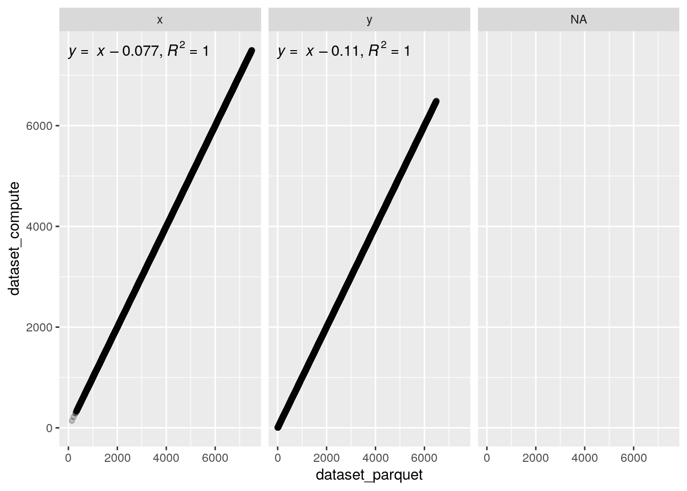
- Join the earlier results from the test sample that we stored in the named list with the results from this computation approach (
centroids) so that we have 5 columns of data (the cell_id and the x and y coordinates from each method) - Rename the columns so they are more informative
- Pivot the data longer for every column except the cell_id column such that there will be 4 columns (the cell_id, a column with each coordinate value (named
value), and two columns describing where each coordinate value is from: (variablex or y) and dataset (computed or parquet)). - We then use pivot wider to create two columns from the single
datasetcolumn so that the parquet coordinate values are in their own column and the computed coordinate values are in their own column. This final dataframe has 4 columns
- cell_id
- variable: x or y
- dataset_parquet: the x or y coordinate for that cell_id from the parquet file
- dataset_compute: the x or y coordinate for that cell_id from the computation method
- This is passed to ggplot where we create scatter plots of the dataset_parquet coordinates on the x-axis and the dataset_compute coordinates on the y-axis for two different panels (
facet_wrap) with one panel comparing the x coordinates and one panel comparing the y coordinates. - We add a regression line with a label for the regression coefficient and R^2 value.
mRNA counts
Earlier we explored what the .h5 files look like because reading in the mRNA counts from the h5 files requires that we know the names used in those files.
read_rna <- function(samples_metadata, sample){
h5file <- here(paste0("data/raw/",
sample,
"/",
sample,
"_",
samples_metadata[which(samples_metadata$sampleID == sample), "brainNumID"],
"-cell_feature_matrix.h5"))
rna_h5data <- rhdf5::h5read(h5file, name = "matrix")
rna_mat <- Matrix::sparseMatrix(i = rna_h5data$indices,
p = rna_h5data$indptr,
x = as.integer(rna_h5data$data),
dims = rna_h5data$shape,
index1 = FALSE) %>%
as.matrix() %>%
as.data.frame() %>%
`rownames<-`(rna_h5data$features$name) %>%
`colnames<-`(rna_h5data$barcodes) %>%
rownames_to_column("genes")
rm(rna_h5data, h5file)
gc()
return(rna_mat)
}
rnacounts_input <- lapply(1:nrow(samples_metadata), function(x) read_rna(samples_metadata, samples_metadata$sampleID[x]))
names(rnacounts_input) <- samples_metadata$DxIDWhat is this code doing?
- We define a function that we can call with
lapplyin order to process the.h5files and produce a list to give to spatialGE eventually. - Uses a similar method to read in the data files as our previous
decompress_read_parquet()function for the parquet files, but it
- doesn’t need to decompress them
- uses
-cell_feature_matrix.h5as the file type specific pattern.
- We read in the corresponding cell feature matrix file using
h5read()from therhdf5package. This package requires anameparameter which corresponds to the name of the top list. In the What are the data? section of the case study, we found that name to be “matrix”. - We build a sparse matrix, using the elements of the
.h5file that correspond to each argument
- i: specifies the positions or indices of the rows with non-zero values in the matrix –
indicesfrom the.h5file. - p: specifies the first column with a non-zero value for each row –
indptrfrom the.h5file. - x: non-zero values for the matrix entires –
datafrom the.h5file. - dims: matrix dimensions –
shapefrom the.h5file. - index1 we set to FALSE because our values are 0-based indices meaning that we start counting indices from 0 instead of 1.
- We expand the sparse matrix to be a dense matrix that can then be turned into a data frame.
- We set the row names to be the feature names from the
.h5file (features$name) - We set the column names to be the cell IDs from the
.h5file (barcodes) - We also move the rownames to the first column and name it “genes” because
spatialGElooks for gene names in the first column, not as rownames, making sure they are unique.. - Finally we store this data frame in our named list for that sample
Preparing a spatialGE object with STlist
We can import our data in a way that the spatialGE package can work with it, by using the STlist() function from spatialGE. This function creates an object in a standardized format that spatialGE functions can utilize in a predictable and generalizable way across datasets.
scz_spatial <- spatialGE::STlist(rnacounts = rnacounts_input,
spotcoords = spatial_coords,
samples = samples_metadata
)Found list of dataframes.
Matching gene expression and coordinate data...
Converting counts to sparse matrices
Completed STlist!Alternative way to import the data using only file paths
If we tried to read in the data directly following fetching it from GEO, we would get a warning message about not being able to find the coordinates for each sample.
So first, we would have to decompress the cells.parquet.gz files for each sample. Once we’ve done that, we would be able to use the following code to read in the data with spatialGE doing all of the work to extract the data from the Xenium outputs. This code lists the directories where the files are located so that spatialGE can look in those directories for the files it expects. You only have to provide these file paths to the rnacounts paramter. You also have to provide it with the samples it should be looking for. These are the names of the directories.
rnacounts <- paste0(here("data/raw/"), list.files(here("data/raw/"), pattern = "GSM"))
#rnacounts would be a list of the directories, but not the files themselves.
scz_spatial <- STlist(rnacounts = rnacounts, samples = str_replace(rnacounts, here("data/raw/"), ""))One downside of this approach is that it’s using the GEO accession numbers as the sample ID that spatialGE is going to use going forward. We would have to change the directory names to have different sample names.
We will explore this object (what it contains, how to access it, etc.) in the Data Exploration section of the case study.
First, let’s release some memory for variables we don’t need anymore.
rm(spatial_coords, rnacounts_input, centroids, df_test_sample, testsample)
gc() used (Mb) gc trigger (Mb) max used (Mb)
Ncells 4082666 218.1 6713764 358.6 6713764 358.6
Vcells 59242511 452.0 303133620 2312.8 378680082 2889.1Because we have had to do some work in order to import the data, we will save the spatialGE object to an .rds file that can be used later without needing to repeat these steps.
saveRDS(scz_spatial, here("data/imported/scz_spatial.rds"))Data Exploration
If you have been following along but stopped, we could load our imported data like so:
Will add instructions on how to fetch the data from the end of the Data Import section from zenodo.
If you skipped the data import section click here.
Will add instructions on how to fetch the data from the end of the Data Import section from zenodo.
The STlist object
We can look at the type of an object using the typeof() function.
typeof(scz_spatial)[1] "S4"The STlist object is an S4 class in R. This means that the object has “slots”. Slots are accessed using an @, rather than a $ (which you would use for a list or data frame column).
Typically you would see the names in a list using the names() function. Instead, for an S4 class object you use the function slotNames().
slotNames(scz_spatial)[1] "counts" "spatial_meta" "gene_meta" "sample_meta" "tr_counts"
[6] "gene_krige" "misc" With an S4 class, you have to pre-specify slots prior to the object’s creation. You can’t add slots as you go through an analysis. Therefore, some of these slots currently have data and others will have data added once some spatialGE functions are used. In this case, the S4 object spatialGE uses has its slots pre-specified by the package developers. We, the package users, will not be able to create any new slots.
If we tried to assign a new slot, we would see an error.
scz_spatial@test <- "This is a test"Error in (function (cl, name, valueClass) : ‘test’ is not a slot in class “STlist”
Slots with data currently
Several of the slots have data already just from us loading the data with spatialGE.
counts
The counts slot stores a named list
typeof(scz_spatial@counts)[1] "list"The named list stores sparse matrices of gene counts – one sparse matrix for each sample.
names(scz_spatial@counts)[1] "Br1139SCZ" "Br5314CTRL" "Br5746SCZ" "Br5973SCZ" "Br8433CTRL"
[6] "Br8667CTRL"For each sparse matrix, the rows store counts for each gene across cells and the columns store counts for each cell across genes. Rather than looking at counts for all of the genes (which would be several hundred rows), we can use the head() function to look at only a few.
head(scz_spatial@counts$Br1139SCZ)6 x 59962 sparse Matrix of class "dgCMatrix" [[ suppressing 34 column names 'aaaafmoo-1', 'aaaamide-1', 'aaabooli-1' ... ]]
A2M . 1 . . . . . . . . . . . . 1 13 . . . . 7 . . . 2 . . 1 . 11 . . 3 .
ABCA2 4 . 1 4 . 1 2 6 3 1 1 5 3 3 4 2 1 9 1 5 8 4 . 1 . . 3 4 2 . 2 28 1 4
ABCG2 . . . . . . . . . . . . . . . 7 . . . . 2 . . . 3 . . 1 . 7 2 . 1 .
ACO1 1 . . . . . 3 1 . . . 2 . . 2 2 . . 1 2 1 2 . . . . 1 . . . . . . .
ACTA2 6 . 1 . . 1 1 . 1 . 1 . 1 . 2 . . 2 . 2 2 . . . . . . 1 2 . . 1 . 2
ACY3 . . . . . . . . . . . . . . . . . . . . . . . . . . . . . . . . . .
A2M ......
ABCA2 ......
ABCG2 ......
ACO1 ......
ACTA2 ......
ACY3 ......
.....suppressing 59928 columns in show(); maybe adjust options(max.print=, width=)
..............................We can see that this is a sparse matrix because a period (.) is used instead of a zero for cells where a gene doesn’t have any observed counts.
Add a thought question about whether the rows or columns tell you how many cells there are. How about the number of genes?
spatial_meta
Similarly, the spatial_meta slot stores a named list.
typeof(scz_spatial@spatial_meta)[1] "list"The named list stores tibbles (a type of data frame) of metadata for cells in each sample. This info includes the x (xpos) and y (ypos) positions for each cell, the total number of counts for each cell (total_counts), as well as the total number of genes with observed counts for that cell (total_genes). The cell ID in the libname column corresponds to the cell names in the column names of the count matrices in the counts slot.
head(scz_spatial@spatial_meta$Br1139SCZ)# A tibble: 6 × 5
libname ypos xpos total_counts total_genes
<chr> <dbl> <dbl> <dbl> <dbl>
1 aaaafmoo-1 2337. 2857. 1988 157
2 aaaamide-1 2352. 2935. 414 79
3 aaabooli-1 2348. 2926. 737 114
4 aaaddhkm-1 2332. 2922. 1268 129
5 aaadlfkl-1 2342. 2917. 336 88
6 aaaeapkh-1 2350. 2870. 558 90The number of rows of these dataframes corresponds to the number cells in each sample. We can look at the number of rows using the function nrow(). Notice we’re using the lapply function like we did previously to do this task for every sample in the named list.
lapply(scz_spatial@spatial_meta, nrow)$Br1139SCZ
[1] 59962
$Br5314CTRL
[1] 48542
$Br5746SCZ
[1] 45675
$Br5973SCZ
[1] 44655
$Br8433CTRL
[1] 61932
$Br8667CTRL
[1] 68976sample_meta
The sample_meta slot stores a tibble of metadata associated with the samples.
scz_spatial@sample_meta# A tibble: 6 × 1
sample_name
<chr>
1 Br1139SCZ
2 Br5314CTRL
3 Br5746SCZ
4 Br5973SCZ
5 Br8433CTRL
6 Br8667CTRL Because we passed a data frame to the samples argument of STlist when we imported the data, we might assume that the whole data frame would be stored as sample metadata. However, STlist appears to only have kept the first column (the sample_name values). We will want to add more metadata to this so that later we have the potential to visualize metadata (such as sample Sex or Age).
Slots without data currently
Several of these slots are currently empty lists, such as gene_meta, tr_counts, and gene_krige. These lists would be filled for each sample by certain spatialGE functions. For example, tr_counts will be filled with the transformed counts when we transform the data in the Data Wrangling section of the case study.
Expression data
The summarize_STlist() function can be used to explore the expression data for each sample. Much of the spatial_meta slot that we already explored is getting summarized with this function (e.g., number of cells per sample, summary stats for the total_counts and total_genes columns).
spatialGE::summarize_STlist(scz_spatial) %>% print(width = Inf)# A tibble: 6 × 9
sample_name spotscells genes min_counts_per_spotcell mean_counts_per_spotcell
<chr> <int> <int> <dbl> <dbl>
1 Br1139SCZ 59962 541 2 750.
2 Br5314CTRL 48542 541 0 680.
3 Br5746SCZ 45675 541 0 615.
4 Br5973SCZ 44655 541 0 619.
5 Br8433CTRL 61932 541 0 860.
6 Br8667CTRL 68976 541 0 939.
max_counts_per_spotcell min_genes_per_spotcell mean_genes_per_spotcell
<dbl> <int> <dbl>
1 4327 2 86.0
2 3365 0 97.5
3 2912 0 92.4
4 3048 0 94.3
5 4241 0 108.
6 4024 0 110.
max_genes_per_spotcell
<int>
1 211
2 219
3 194
4 204
5 219
6 218This is a 6 X 9 dataframe that provides
sample_name: The sample names we provided in sample metadata. In this case, these are the combination of the study’s Brain IDs and the Primary Diagnosis abbreviations (CTRL or SCZ).spotscells: how many cells that sample hasgenes: how many genes that sample hasmin_counts_per_spotcell: minimum number of counts per cell for that samplemean_counts_per_spotcell: average number of counts per cell for that samplemax_counts_per_spotcell: maximum number of counts per cell for that samplemin_genes_per_spotcell: minimum number of genes with non-zero counts per cell for that samplemean_genes_per_spotcell: average number of genes with non-zero counts per cell for that samplemax_genes_per_spotcell: maximum number of genes with non-zero counts per cell for that sample
Verifing that non-zero count genes are being counted
Which cells have counts of 2 (the minimum number of counts observed in a cell) for the Br1139SCZ sample?
which(Matrix::colSums(scz_spatial@counts$Br1139SCZ) == 2)kflbgpkd-1
42598 We will store that cell ID in a variable cell_id_oi because it is the cell ID of interest.
cell_id_oi <- names(which(Matrix::colSums(scz_spatial@counts$Br1139SCZ) == 2))Notice that using that cell ID, counts are returned as 0, not a period. We have to use the [,cell_id_oi] syntax because we’re indexing – specifically providing a column name and want all of the rows (specified using only the comma , before the variable with the column name within the brackets).
head(scz_spatial@counts$Br1139SCZ[,cell_id_oi]) A2M ABCA2 ABCG2 ACO1 ACTA2 ACY3
0 0 0 0 0 0 Now, for that cell ID, which genes do not have a count of zero?
which(scz_spatial@counts$Br1139SCZ[,cell_id_oi] != 0) GFAP MTRNR2L1
113 184 Again, we’ll store those gene names in a variable.
gene_names_oi <- names(which(scz_spatial@counts$Br1139SCZ[,cell_id_oi] != 0))We can then look at the counts for those genes. Since there are two of them, we would expect the count to be 1 for each.
scz_spatial@counts$Br1139SCZ[gene_names_oi,cell_id_oi] GFAP MTRNR2L1
1 1 And it is – suggesting that the summarize_STlist() function and spatial_meta slot are assessing how many genes in each cell have a non-zero count.
The distribution_plots() function can be used to visually summarizes this data using a violin plot. First, we specify we want to visualize the distribution of counts per cell for each sample.
spatialGE::distribution_plots(scz_spatial, plot_type='violin', plot_meta='total_counts')$total_counts
Then we use it to create a violin plot of genes per cell for each sample by switching the value we give the plot_meta parameter.
distribution_plots(scz_spatial, plot_type='violin', plot_meta='total_genes')$total_genes
What do we observe:
- Every sample has cells with at least 0 or 2 counts as a minimum, meaning that there are cells without any observed counts.
- Every sample has cells with at least 0 or 2 genes with observed counts as well.
- Mean counts per cell are around 600-900, with the maximum counts in the thousands.
- Mean number of genes with observed counts per cell is around 80-110, with the maximum number of genes around 200.
- Some samples have a lot more cells than others. This could be due to differences in tissue size.
- The number of genes reported in the
genescolumn of thesummarize_STlist()function output is not what we would expect at all! The Xenium panel the study used had 300 genes, so why does spatialGE think that we have 541 genes?
We can look at the gene names by exploring our STlist object some more.
Number of and names of genes
We could list all of the gene names like so:
rownames(scz_spatial@counts$Br1139SCZ)but that would print out 541 names – which is a lot.
We learned earlier that Xenium uses control codewords and probes for their own quality control (QC). We could look to see if any of the gene names have words associated with these in their names.
Specifically, we’ll use the stringr::str_detect() function to search the gene names for either the word “Codeword” or (|) the word “Probe”. This will return a list of TRUEs and FALSEs where TRUE means one of those words was found and FALSE means neither of those words were found. Rather than looking at 541 TRUEs and FALSEs, we will use the sum() function to count the number of TRUEs.
stringr::str_detect(rownames(scz_spatial@counts$Br1139SCZ),
"Codeword|Probe") %>%
sum()[1] 241Sure enough, there are 241 gene names with “Codeword” or “Probe” in the gene name. These are from the Xenium QC. What exactly are the names?
We still don’t really want to print out 241 gene names, so we can get an idea of what they might look like using the head() function again to just look at a few. We’ll take the rownames and pipe that to a data frame and use the dplyr:filter() function with our str_detect() from before to keep only the names with “Codeword” or “Probe” and then pipe that to head().
rownames(scz_spatial@counts$Br1139SCZ) %>%
as.data.frame() %>%
dplyr::filter(str_detect(., "Codeword|Probe")) %>%
head() .
1 NegControlProbe_00042
2 NegControlProbe_00041
3 NegControlProbe_00039
4 NegControlProbe_00035
5 NegControlProbe_00034
6 NegControlProbe_00033These gene names appear to have an underscore (_) followed by some numerical ID to differentiate different probes from each other. We can remove these numerical IDs and look at the unique result of the names. Specifically, we use the mutate() function to create a new column. The new column uses the stringr::str_extract() function together with a regex pattern to extract all consecutive (+) non-numerical (\D) characters. We then select this new column and pipe the output to the table() function to see what the unique values are and how many of them there are.
rownames(scz_spatial@counts$Br1139SCZ) %>%
as.data.frame() %>%
filter(str_detect(., "Codeword|Probe")) %>%
mutate(simplified_name = stringr::str_extract(.,
"\\D+")) %>%
select(simplified_name) %>%
table()simplified_name
NegControlCodeword_ NegControlProbe_ UnassignedCodeword_
41 20 180 We appear to have negative control codewords, negative control probes, and unassigned codewords. We can use the negative control probes to make sure that we are only keeping cells with very little expression of these probes. How much expressiion of these probes is typically happening in the sample right now?
neg_control_probes_only <- scz_spatial@counts$Br1139SCZ[startsWith(rownames(scz_spatial@counts$Br1139SCZ),
"NegControlProbe_"), ] %>%
Matrix::colSums() %>%
as.data.frame()
colnames(neg_control_probes_only) <- "CountPerCell"neg_control_probe_summary <- neg_control_probes_only %>%
group_by(CountPerCell) %>%
summarize(n = n()) %>%
mutate(prop = n / sum(n) * 100)
neg_control_probe_summary# A tibble: 6 × 3
CountPerCell n prop
<dbl> <int> <dbl>
1 0 50117 83.6
2 1 8310 13.9
3 2 1291 2.15
4 3 203 0.339
5 4 30 0.0500
6 5 11 0.0183We can visualize these summaries a few ways:
neg_control_probe_summary %>%
ggplot(aes(x=CountPerCell, y = n)) +
geom_bar(stat = "identity") +
theme_bw() +
ylab("Number of cells")
neg_control_probe_summary %>%
ggplot(aes(x=CountPerCell, y = prop)) +
geom_bar(stat = "identity") +
theme_bw() +
ylab("Proportion of cells")
neg_control_probe_summary %>%
ggplot(aes(x=CountPerCell, y = cumsum(prop))) +
geom_line() +
geom_point() +
theme_bw() +
geom_hline(yintercept=99, linetype = 'dashed', color = 'blue') +
ylab("Cumulative proportion")
The authors of Kwon et al. (2026) used the not just the Negative Control Probes, but also the Negative Control Codewords and Unassigned Codewords in their QC:
We used the negative control probes, negative control codewords, and unassigned codewords from the Xenium panel. We removed all cells with expression of any of the above three features in the 99th percentile.
It doesn’t look like this will filter out a lot of cells, but it will filter out a handful of them.
What values specifically are we going to use when we filter given how the authors described their filtering?
negcontrol_probe_cutoff <-
unlist(lapply(scz_spatial@counts,
function(x) x[startsWith(rownames(x),
"NegControlProbe_"), ] %>%
Matrix::colSums()
)
) %>%
quantile(0.99)
negcontrol_probe_cutoff99%
2 negcontrol_cdwd_cutoff <-
unlist(lapply(scz_spatial@counts,
function(x) x[startsWith(rownames(x),
"NegControlCodeword_"), ] %>%
Matrix::colSums()
)
) %>%
quantile(0.99)
negcontrol_cdwd_cutoff99%
2 unassigned_cdwd_cutoff <-
unlist(lapply(scz_spatial@counts,
function(x) x[startsWith(rownames(x),
"Unassigned"), ] %>%
Matrix::colSums()
)
) %>%
quantile(0.99)
unassigned_cdwd_cutoff99%
3 If we use these probes and codewords to filter out some cells, and then we remove those probes and codewords, will all of the remaining genes have informative counts (e.g., have observed counts greater than 0 across cells)?
scz_spatial@counts$Br1139SCZ[!grepl("^NegControl|Unassigned", rownames(scz_spatial@counts$Br1139SCZ)), ] %>%
Matrix::rowSums() %>%
quantile() 0% 25% 50% 75% 100%
141.00 10557.00 33134.00 82599.75 5067240.00 Yes, all remaining genes from the Xenium panel are informative, showing counts greater than 0 across cells (at least for this sample). The minimum count for a gene across the cells is 141 in this sample.
Looking forward
Given our data exploration, what steps do we want to do in the Data Wrangling section, with this data, prior to visualization and analysis?
- We want to add more sample metadata.
- Use the negative control probes, negative control keywords, and unassigned keywords to filter out cells that have counts >99th percentile as described by the authors using our
negcontrol_probe_cutoff,negcontrol_cdwd_cutoff, andunassigned_cdwd_cutoffvariables. - Remove the control codeword and probe “genes” from the dataset.
- Use spatialGE’s
filter_data()function to filter cells based on library size and features detected. - Use spatialGE’s
tranform_data()function to transform the raw counts.
Add instructions on saving the cutoffs to a file that can be imported during the Data Wrangling section if needed.
Data Wrangling
If you have been following along but stopped, we could load our imported data like so:
Will add instructions on how to fetch the data from the end of the Data Import section (both scz_spatial object and samples_metadata data frame) (and cutoffs from the Data Exploration section) from zenodo.
If you skipped the data import section click here.
Will add instructions on how to fetch the data from the end of the Data Import section (and cutoffs from the Data Exploration section) from zenodo.
Adding more sample metadata
We can use a joining function (left_join()) to combine the sample metadata in the sample_meta slot with our samples_metadata data frame from the Data Import section of the case study. This adds columns such as Sex and Age to the sample metadata stored in the spatialGE object.
scz_spatial@sample_meta <- scz_spatial@sample_meta %>%
dplyr::left_join(samples_metadata, by = c("sample_name" = "DxID"))Filtering
Using Control Probes and Codewords
First we create a function that we can use with lapply that takes the filtering thresholds that we found previously as well as each counts matrix as inputs. Notice that the thresholds are named arguments meaning they have default values set to the exact variables we were working with earlier. We don’t have to specify them when we call the function because they have these default values. We find the combined expression within each cell of each of the three associated controls using column sums and identify the cell IDs where the combined expression of any one of these types of controls is greater than or equal to the 99th percentile threshold. Finally, we take a union of the identified cell IDs.
By calling this function with lapply, we’ll have a named list (to_remove_all) where each sample name stores a vector of cell IDs that should be removed for that sample.
We use a for loop to then loop through the sample names and actually filter the cell IDs within the count matrix. Recall that the cells correspond to the columns in the count matrix. Our filter is specifically using an exclamation point (!) to specify that if a column name is not the list of cell IDs to be filtered, then keep it.
We use a for loop for the actual filtering because we don’t want to output a list. Rather we want to overwite the counts slot, doing the same filtering steps for all of the samples (just using a different set of cell IDs to keep).
findOverlap <- function(mat, negcp = negcontrol_probe_cutoff, negcc = negcontrol_cdwd_cutoff, ucc = unassigned_cdwd_cutoff){
which_negcp <- names(which(mat[startsWith(rownames(mat), "NegControlProbe"), ] %>% Matrix::colSums() >= negcp))
which_negcc <- names(which(mat[startsWith(rownames(mat), "NegControlCodeword"), ] %>% Matrix::colSums() >= negcc))
which_ucc <- names(which(mat[startsWith(rownames(mat), "Unassigned"), ] %>% Matrix::colSums() >= ucc))
to_remove <- union(union(which_negcp, which_negcc), which_ucc)
return(to_remove)
}
to_remove_all <- lapply(scz_spatial@counts, findOverlap)
for (sample_name in names(to_remove_all)){
scz_spatial@counts[[sample_name]] <- scz_spatial@counts[[sample_name]][,!colnames(scz_spatial@counts[[sample_name]]) %in% to_remove_all[[sample_name]]]
}How many cells do we have per sample now?
lapply(scz_spatial@counts, ncol)$Br1139SCZ
[1] 56868
$Br5314CTRL
[1] 43543
$Br5746SCZ
[1] 40342
$Br5973SCZ
[1] 43616
$Br8433CTRL
[1] 55868
$Br8667CTRL
[1] 63727We also want to remove the spatial metadata information about these cells since they no longer have counts associated with them in the counts matrix. Recall that each row corresponds to a cell, and the cell IDs are stored in the libname column of the spatial_meta slot.
for (sample_name in names(to_remove_all)){
scz_spatial@spatial_meta[[sample_name]] <- scz_spatial@spatial_meta[[sample_name]][!scz_spatial@spatial_meta[[sample_name]]$libname %in% to_remove_all[[sample_name]],]
}Removing Control Probes and Codewords
Now that we’ve used the control probes and codewords to filter out cells, we can remove them as “genes” from our counts matrix.
for (sample_name in names(scz_spatial@counts)){
scz_spatial@counts[[sample_name]] <- scz_spatial@counts[[sample_name]][!grepl("^NegControl|Unassigned",rownames(scz_spatial@counts[[sample_name]])), ]
}All of the counts matrices will now be 300 rows representing data for the 300 Xenium panel genes.
lapply(scz_spatial@counts, nrow)$Br1139SCZ
[1] 300
$Br5314CTRL
[1] 300
$Br5746SCZ
[1] 300
$Br5973SCZ
[1] 300
$Br8433CTRL
[1] 300
$Br8667CTRL
[1] 300Using spatialGE
The filtering that we’ve done, while important, isn’t enough. We also need to consider the overall library size of and number of features in cells.
Library size and number of features
The library size is the total sum of the counts in a single cell across genes.
The number of features in a cell is the count of unique genes that have a count of at least one in a given cell.
Both the library size and the number of features in a cell serve as indicators of cell quality. Cells may be damaged during the sample extraction or preparation steps
scz_spatial <- spatialGE::filter_data(scz_spatial,
spot_minreads=50,
spot_maxreads=3500,
spot_mingenes=10)What do the summary statistics and distributions look like now?
summarize_STlist(scz_spatial) %>% print(width = Inf)# A tibble: 6 × 9
sample_name spotscells genes min_counts_per_spotcell mean_counts_per_spotcell
<chr> <int> <int> <dbl> <dbl>
1 Br1139SCZ 56482 300 50 747.
2 Br5314CTRL 43453 300 50 649.
3 Br5746SCZ 40203 300 50 594.
4 Br5973SCZ 43444 300 50 620.
5 Br8433CTRL 53681 300 50 854.
6 Br8667CTRL 63253 300 50 920.
max_counts_per_spotcell min_genes_per_spotcell mean_genes_per_spotcell
<dbl> <int> <dbl>
1 3499 10 85.5
2 3247 10 94.9
3 2909 11 90.3
4 3047 10 94.1
5 3499 11 109.
6 3498 10 109.
max_genes_per_spotcell
<int>
1 209
2 218
3 192
4 203
5 218
6 216Notice that the number of cells retained decreased for each sample again. Some decreased by only about one hundred while another sample decreased by a little over two thousand!
distribution_plots(scz_spatial, plot_type='violin', plot_meta='total_counts')$total_counts
distribution_plots(scz_spatial, plot_type='violin', plot_meta='total_genes')$total_genes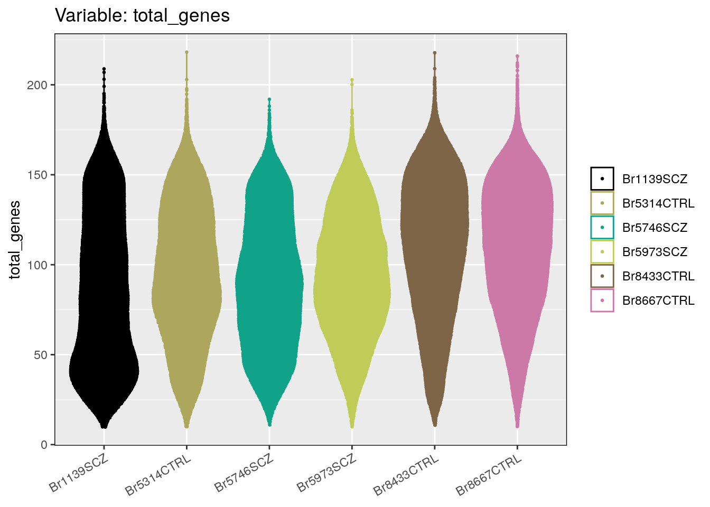
How do you report which cell barcodes were filtered?
We may need to report what cell IDs are filtered out. We can create a list of cell IDs by comparing the cell IDs that are still in our spatialGE object’s spatial_meta slot with those that were originally in pre-filtered object’s spatial_meta slot. We specifically, would want the cell IDs that were in the original but aren’t in there anymore. The set_diff() function is useful for this task.
Kwon et al. (2026) didn’t just report a list of what they filtered out, they also created a visualization of which cells were filtered out (Figure S25). We’ll discuss this and how to create this in the Data Visualizaiton section of the case study.
Normalizing
Transforming the raw mRNA counts is again necessary because of technical biases. Typically if working with single cell RNAseq data or data from sequencing based spatial transcriptomics assays (e.g., Visium), normalization methods try to correct for different sequencing depths in different cells.
Transformation with spatialGE can be performed with either the log-transformation or the SCTransform method. Both of these methods are best suited to working with
https://bioconductor.org/books/release/OSTA/pages/ind-normalization.html
In the future, would like to use an alternative normalization method like using cell area or SpaNorm and adding result to the tr_counts slot instead of using SCTransform since this data is imaging based instead of sequencing based. We can get cell area from the parquet files. We would have to join that information with the @spatial_meta slot.
We can only perform one transformation of the data since the transformed counts will be stored in the tr_counts slot and we can’t create another one. If we wanted to run both and compare them, we would need two different spatialGE STlist objects.
scz_spatial_tr <- rlang::duplicate(scz_spatial)Log Transformation
Explain log transformation.
scz_spatial <- spatialGE::transform_data(scz_spatial, method='log', cores=2)SCTransform
Explain SCTransform method.
scz_spatial_tr <- transform_data(scz_spatial_tr, method = 'sct', cores = 2)Visualize
We can visualize the library size for each cell within each sample.
visualize_lib_size <- function(mat, title_name){
Matrix::colSums(mat) %>%
as.data.frame() %>%
ggplot(aes(x=`.`)) + geom_histogram(bins = 500) + theme_bw() + ggtitle(title_name)
}
patchwork::wrap_plots(purrr::map2(scz_spatial@counts, names(scz_spatial@counts), visualize_lib_size), nrow = 2) + patchwork::plot_annotation(title = "Raw counts")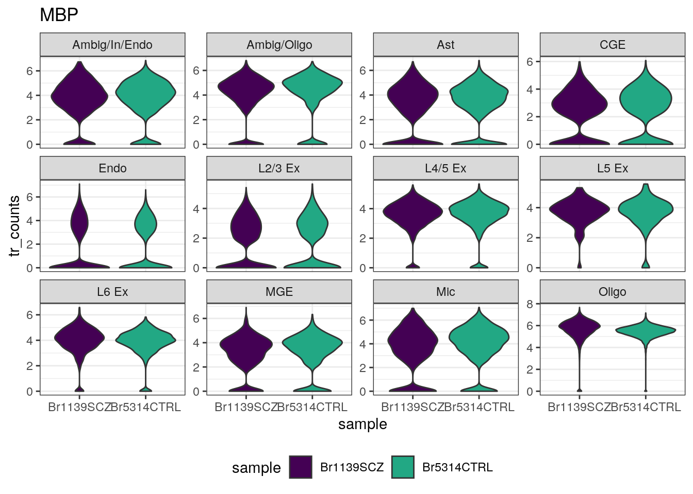
wrap_plots(purrr::map2(scz_spatial@tr_counts, names(scz_spatial@tr_counts), visualize_lib_size), nrow = 2) + plot_annotation(title = "Log transformed counts")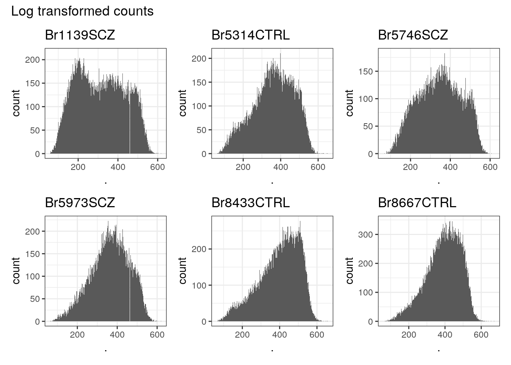
wrap_plots(map2(scz_spatial_tr@tr_counts, names(scz_spatial_tr@tr_counts), visualize_lib_size), nrow = 2) + plot_annotation(title = "SCTransform counts")
We can visualize the distribution of expression of a few genes (before and after the normalization) using the distribution_plots() function.
raw_plots <- distribution_plots(scz_spatial, genes = c("CX3CR1", "FKBP5", "PVALB", "MBP"), data_type = "raw")
transformed_log_plots <- distribution_plots(scz_spatial, genes = c("CX3CR1", "FKBP5", "PVALB", "MBP"), data_type = "tr")
transformed_sct_plots <- distribution_plots(scz_spatial_tr, genes = c("CX3CR1", "FKBP5", "PVALB", "MBP"), data_type = "tr")raw_plots$CX3CR1 + transformed_log_plots$CX3CR1 + transformed_sct_plots$CX3CR1 + patchwork::plot_layout(guides = "collect", nrow=3)
raw_plots$FKBP5 + transformed_log_plots$FKBP5 + transformed_sct_plots$FKBP5 + patchwork::plot_layout(guides = "collect", nrow=3)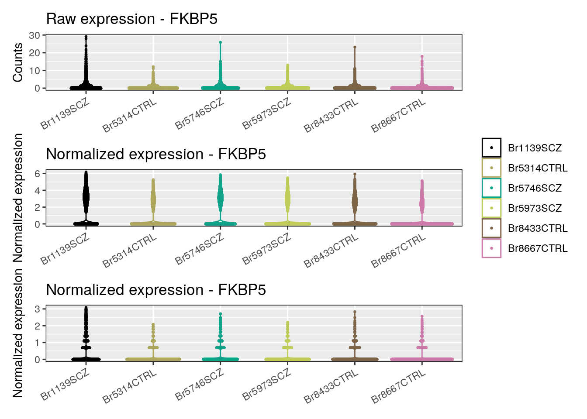
raw_plots$PVALB + transformed_log_plots$PVALB + transformed_sct_plots$PVALB + patchwork::plot_layout(guides = "collect", nrow=3)
raw_plots$MBP + transformed_log_plots$MBP + transformed_sct_plots$MBP + patchwork::plot_layout(guides = "collect", nrow=3)
Now we want to clear up some R memory
rm(raw_plots, transformed_log_plots, transformed_sct_plots)
gc() used (Mb) gc trigger (Mb) max used (Mb)
Ncells 4260136 227.6 6713764 358.6 6713764 358.6
Vcells 204109653 1557.3 436862823 3333.0 436862823 3333.0saveRDS(scz_spatial, here("data/wrangled/scz_spatial.rds"))Data Visualization
If you have been following along but stopped, we could load our imported data like so:
Add instructions for loading the data…
If you skipped the data import section click here.
Add instructions for loading the data…
We are going to look at the expression of the genes FKBP5, CX3CR1, NTRK2 (thought question?), MBP, PVALB, and BDNF (thought question?). For each gene we are going to consider both the amount of its expression as well as where it is expressed (spatially) in the tissue samples. For each gene, we can visually compare its spatial expression in a sample from a neurotypical participant to a sample from a participant with Schizophrenia.
To visually explore the spatial distribution of expression of these genes, we are going to plot Quilt plots.
We’re going to make quilt plots showing the expression of these genes for each spot/cell in two samples (one NTC and one SCZ).
Note that quilt plots don’t require histology image (image of the tissue), because the spatial coordinates data that we input provides x and y coordinates for the center of each cell/spot. Therefore, we can place the location of these cells without a tissue image.
Also note that this is Xenium data which means there are a lot of cells! So we’re going to use the ptsize argument to set the point size of the spots or cells to be really small. If we make it too large, it’s dense/cramped/hard to view the quilt plot
I tested several color palettes and settled on PuBuGn…. more explanation below.
We have ggpubr combine the common legends and display them on the bottom. It also is plotting the quilt plots in a 2 X 2 grid
Differential Expression of Diffusely Distributed Genes
CX3CR1
quilt26CX3CR1 <- spatialGE::STplot(scz_spatial_tr,
samples = samples_metadata$DxID[c(2,6)],
genes = c("CX3CR1"),
color_pal='PuBuGn',
ptsize=0.05)
quiltArrangeCX3CR1 <- ggpubr::ggarrange(plotlist=quilt26CX3CR1,
nrow=1,
ncol=2,
legend='bottom',
common.legend = TRUE)
quiltArrangeCX3CR1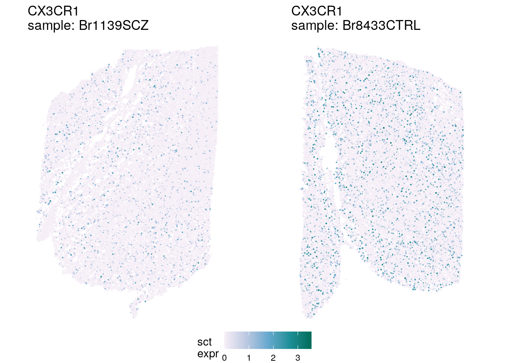
displayQuilt <- function(stlist, sampleNames, gene){
quiltPlots <- spatialGE::STplot(stlist,
samples = sampleNames,
genes = gene,
color_pal = 'PuBuGn',
ptsize=0.05
)
quiltArrange <- ggpubr::ggarrange(plotlist=quiltPlots,
nrow = 1,
ncol = 2,
legend = 'bottom',
common.legend = TRUE)
return(list(plots = quiltPlots, arranged = quiltArrange))
}sampleset2 <- samples_metadata$DxID[c(1,4)]
quiltCX3CR1_sampleset2 <- displayQuilt(scz_spatial_tr,
sampleset2,
"CX3CR1")
quiltCX3CR1_sampleset2$arranged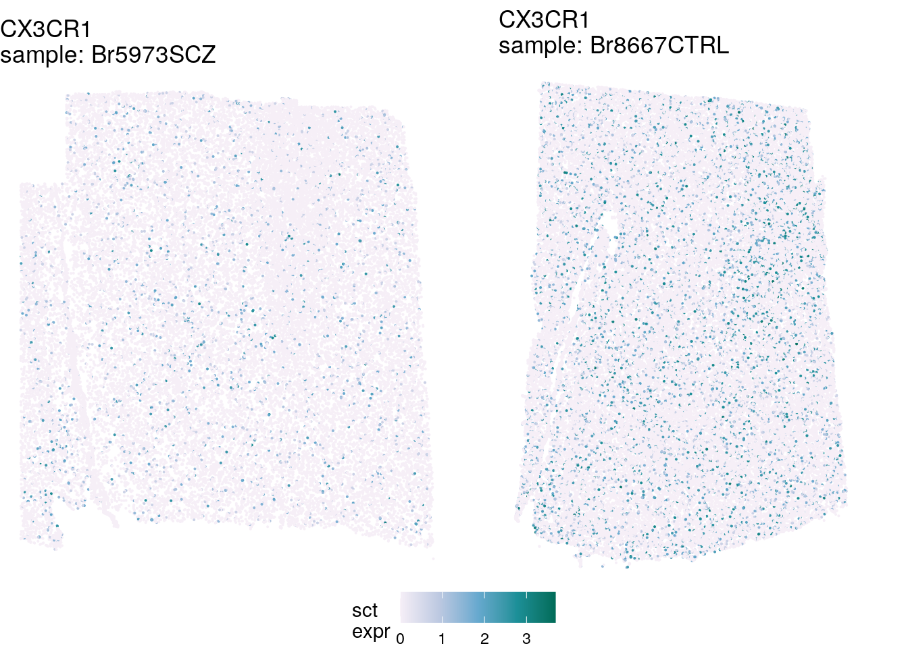
FKBP5
sampleset1 <- samples_metadata$DxID[c(2,6)]
quiltFKBP5_sampleset1 <- displayQuilt(scz_spatial_tr,
sampleset1,
"FKBP5")
quiltFKBP5_sampleset1$arranged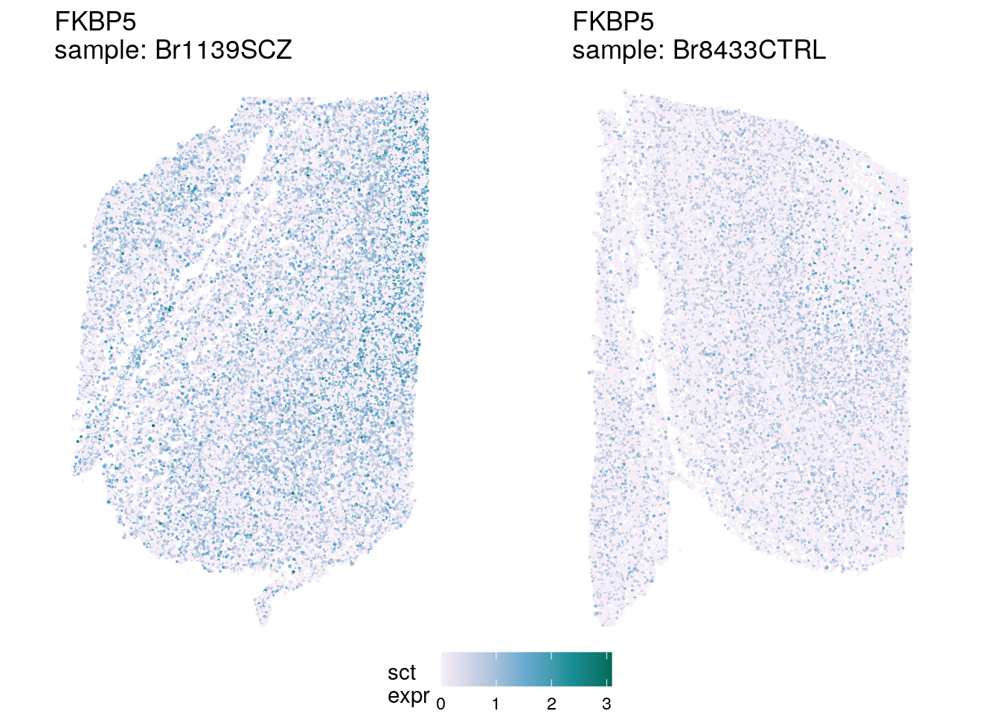
quiltFKBP5_sampleset2 <- displayQuilt(scz_spatial_tr,
sampleset2,
"FKBP5")
quiltFKBP5_sampleset2$arranged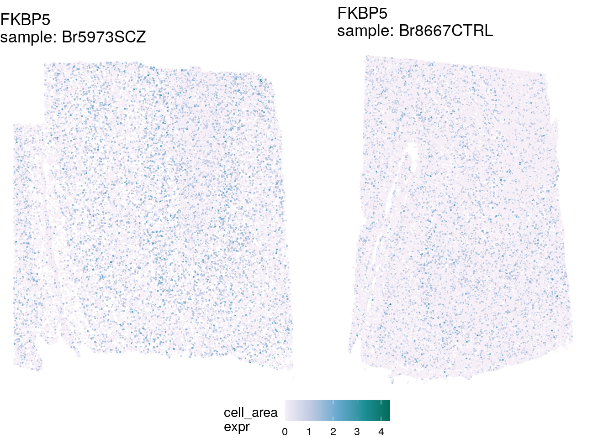
Differential Expression of Spatially Distributed Genes
MBP
quiltMBP_sampleset1 <- displayQuilt(scz_spatial_tr,
sampleset1,
"MBP")
quiltMBP_sampleset1$arranged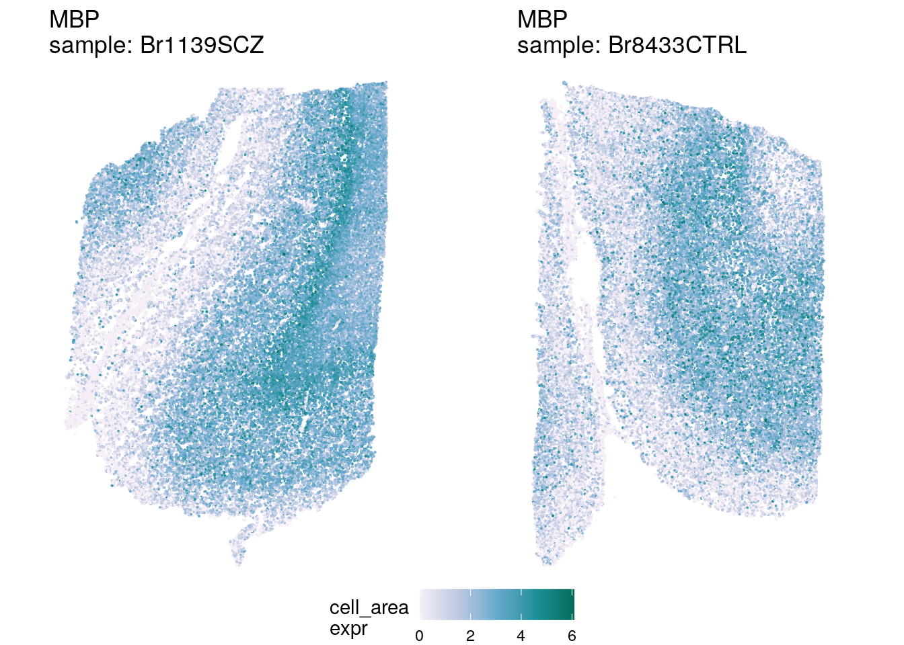
quiltMBP_sampleset2 <- displayQuilt(scz_spatial_tr,
sampleset2,
"MBP")
quiltMBP_sampleset2$arranged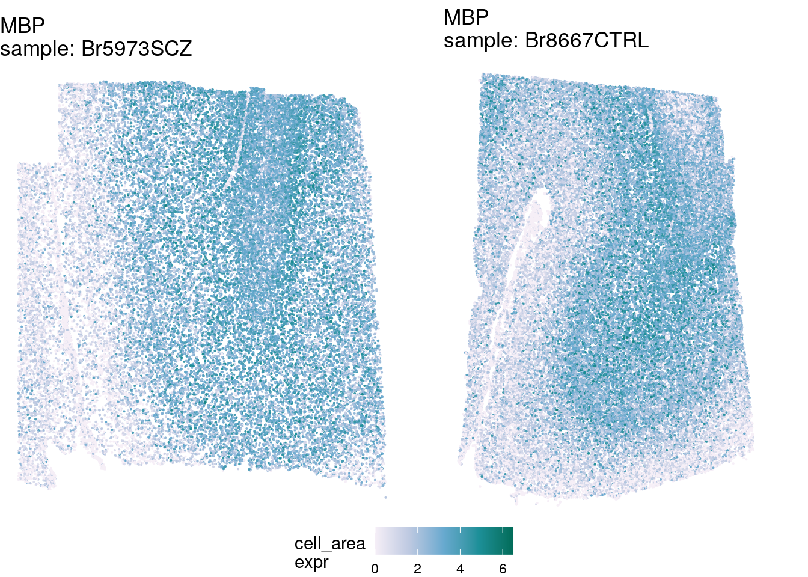
PVALB
quiltPVALB_sampleset1 <- displayQuilt(scz_spatial_tr,
sampleset1,
"PVALB")
quiltPVALB_sampleset1$arranged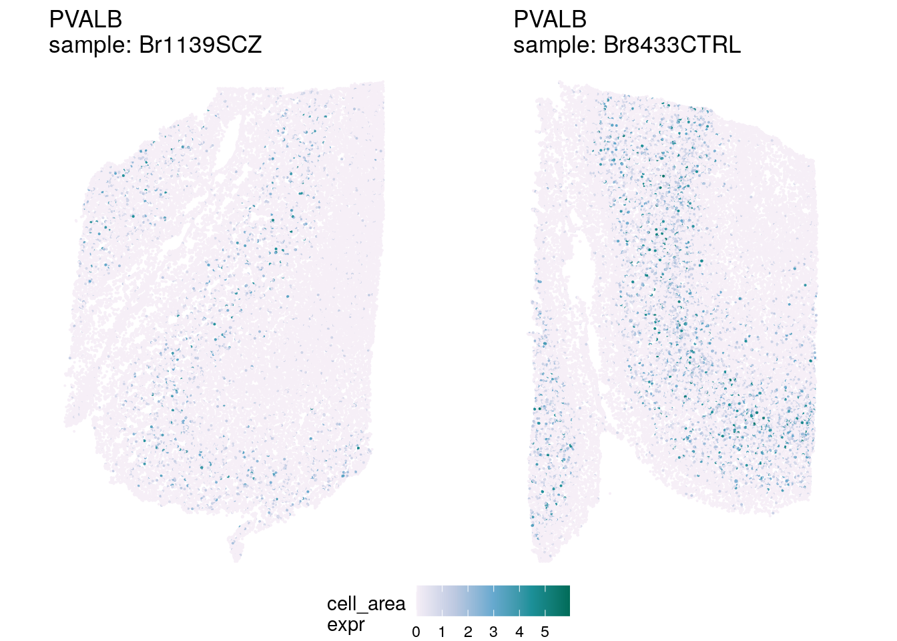
quiltPVALB_sampleset2 <- displayQuilt(scz_spatial_tr,
sampleset2,
"PVALB")
quiltPVALB_sampleset2$arranged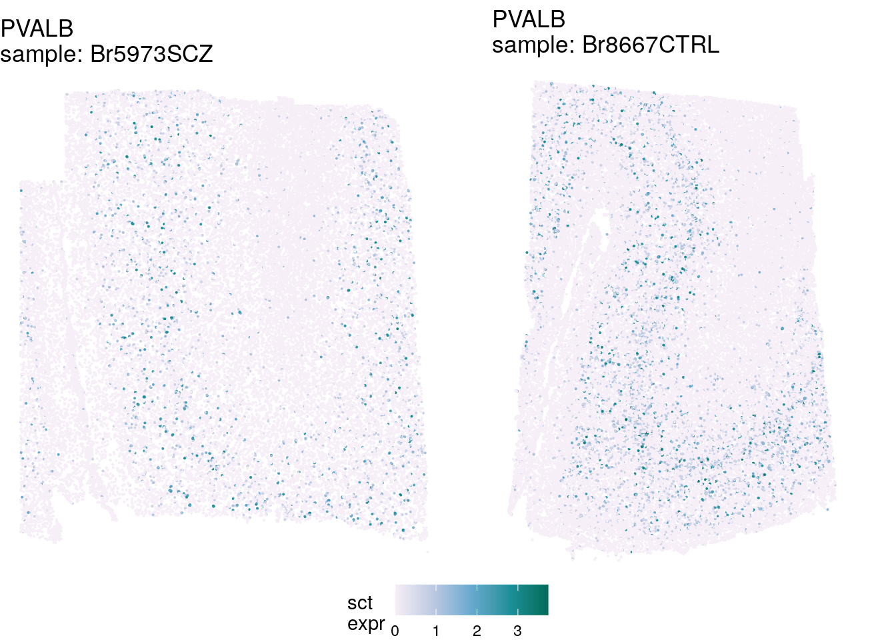
FKBP5 is annotated in the Figure 2a Volcano Plot as DEGs. I went to Supplementary Table 4 from the paper and found the gene with the lowest / most negative log fold change: CX3CR1
Color Palettes
I tested several color palettes and settled on PuBuGn for several reasons. (Note: this could be a cool side quest to include in the case study)
- Easier to distinguish changes in expression (e.g., up vs down regulated).
BuRdandSpectralwere best for this otherwise. - The lighter color was no longer in the center (as if the log expression values were “centered”) and instead is on the lower level of the spectrum.
Spectralwas the only other one not centered on white, but it was still centered on a lighter color. - Looking at the result with a color vision deficiency simulator (
cvg_grid()fromcolorblindr) the general conclusions are still possible in my opinion. This wasn’t the case withPrGn,BuRd, orSpectralwhen I tested them.
colorblindr::cvd_grid(plot = quiltArrangeCX3CR1)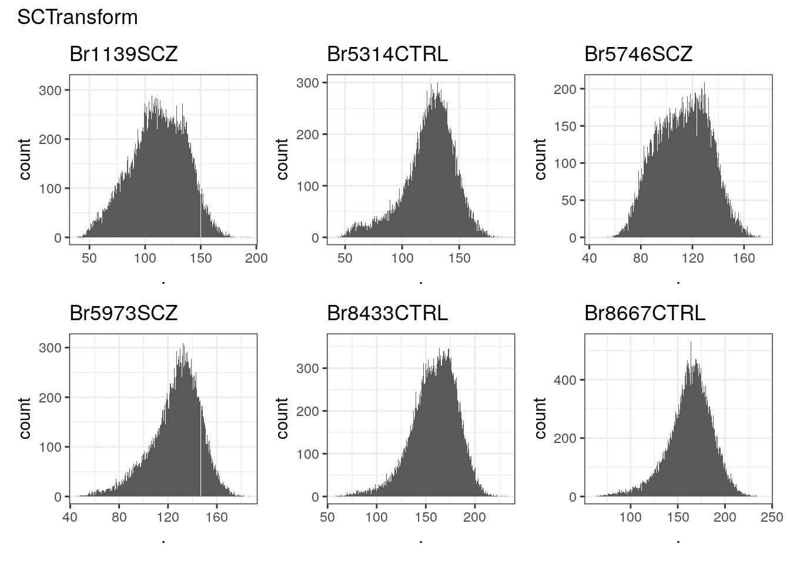
Data Analysis
If you have been following along but stopped, we could load our imported data like so:
Add instructions for loading the data…
If you skipped the data import section click here.
Add instructions for loading the data…
Clustering
cluster_assignments <- read.csv(here("data/wrangled/cluster_assignments_withlibname.csv")) %>%
rename(annot = Cluster) %>%
fill(annot) %>%
mutate(annot=case_when(
annot %in% c(6, 8, 1) ~ "Oligo",
annot == 10 ~ "Ambig/Oligo",
annot == 7 ~ "Mic",
annot == 15 ~ "Ambig/In/Endo",
annot == 18 ~ "L5 Ex",
annot == 14 ~ "L6 Ex",
annot == 11 ~ "L4/5 Ex",
annot == 2 ~ "L2/3 Ex",
annot %in% c(17, 16, 4) ~ "Ast",
annot %in% c(5, 13, 3) ~ "Endo",
annot == 12 ~ "CGE",
annot == 9 ~ "MGE",
.default = NA_character_))
for (sample_name in names(scz_spatial_tr@spatial_meta)){
scz_spatial@spatial_meta[[sample_name]] <- left_join(scz_spatial@spatial_meta[[sample_name]],
cluster_assignments %>%
filter(SampleName == sample_name) %>%
select(libname, annot)
)
scz_spatial_tr@spatial_meta[[sample_name]] <- left_join(scz_spatial_tr@spatial_meta[[sample_name]],
cluster_assignments %>%
filter(SampleName == sample_name) %>%
select(libname, annot)
)
}Joining with `by = join_by(libname)`
Joining with `by = join_by(libname)`
Joining with `by = join_by(libname)`
Joining with `by = join_by(libname)`
Joining with `by = join_by(libname)`
Joining with `by = join_by(libname)`
Joining with `by = join_by(libname)`
Joining with `by = join_by(libname)`
Joining with `by = join_by(libname)`
Joining with `by = join_by(libname)`
Joining with `by = join_by(libname)`
Joining with `by = join_by(libname)`Spatial distribution of expression
cellType <- STplot(scz_spatial_tr, plot_meta = "annot", samples = sampleset1)
combined_list <- c(cellType, quiltMBP_sampleset1$plots)
ggpubr::ggarrange(plotlist = combined_list, ncol=2, nrow=2, labels = "AUTO")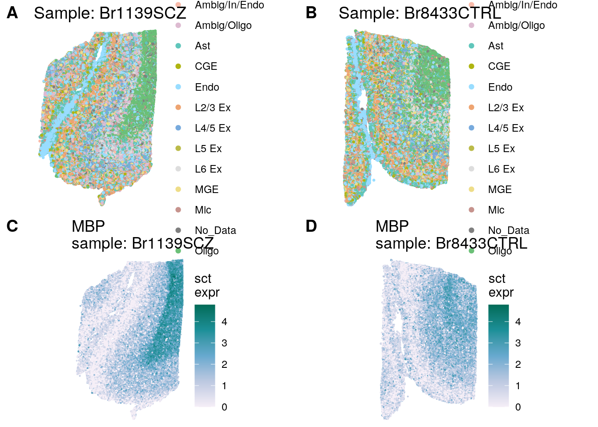
combined_list2 <- c(cellType, quiltPVALB_sampleset1$plots)
ggpubr::ggarrange(plotlist = combined_list2, ncol=2, nrow=2, labels = "AUTO")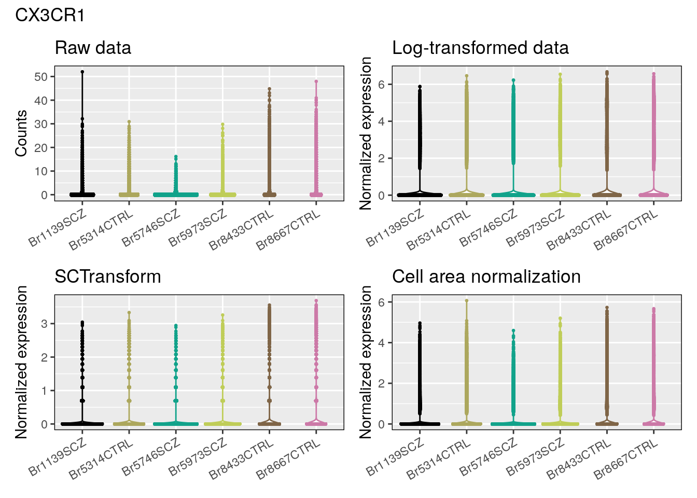
Gene specific summaries of expression
We can also look at summaries of the expression of a few of these genes in these cell types.
combine_counts_annot <- function(matannot, matcount, sample_name, gene_name){
full_join(
matannot[[sample_name]][,c("libname", "annot")],
matcount[[sample_name]][gene_name, ] %>%
data.frame() %>%
rownames_to_column("libname")
) %>% `colnames<-`(c("libname", "annot", sample_name))
}
use_combined_data <- function(mat, gene_name, use = "violin", samples = c("Br1139SCZ", "Br5314CTRL")){
combined_data <- bind_rows(combine_counts_annot(mat@spatial_meta, mat@tr_counts, samples[1], gene_name),
combine_counts_annot(mat@spatial_meta, mat@tr_counts, samples[2], gene_name)) %>%
pivot_longer(starts_with("Br"),
values_to = "tr_counts",
names_to = "sample") %>%
drop_na()
if (use == "violin"){
return(
combined_data %>%
ggplot(aes(x = sample,
y = tr_counts,
fill = sample)) +
geom_violin() +
facet_wrap(~annot, scales = "free_y") +
theme_bw() +
scale_fill_viridis_d(end = 0.6) +
ggtitle(gene_name) +
theme(legend.position = "bottom")
)
} else if (use == "summary"){
table_length <- length(unique(combined_data$annot)) * 2
return(
combined_data %>%
group_by(annot, sample) %>%
summarize(
min_exp = min(tr_counts),
max_exp = max(tr_counts),
avg_exp = mean(tr_counts),
median_exp = median(tr_counts),
var_exp = var(tr_counts)
) %>%
print(n=table_length)
)
} else {
message("No other downstream uses supported besides 'violin' and 'summary'")
}
}use_combined_data(scz_spatial, use = "violin", gene_name = "MBP")Joining with `by = join_by(libname)`
Joining with `by = join_by(libname)`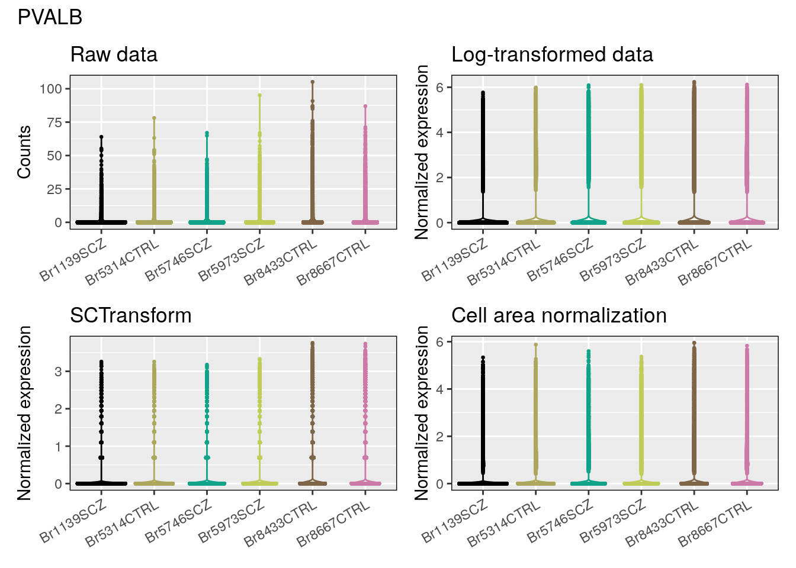
use_combined_data(scz_spatial, use = "summary", gene_name = "PVALB")Joining with `by = join_by(libname)`
Joining with `by = join_by(libname)`
`summarise()` has grouped output by 'annot'. You can override using the
`.groups` argument.# A tibble: 24 × 7
# Groups: annot [12]
annot sample min_exp max_exp avg_exp median_exp var_exp
<chr> <chr> <dbl> <dbl> <dbl> <dbl> <dbl>
1 Ambig/In/Endo Br1139SCZ 0 4.28 0.154 0 0.398
2 Ambig/In/Endo Br5314CTRL 0 5.07 0.205 0 0.589
3 Ambig/Oligo Br1139SCZ 0 3.95 0.106 0 0.299
4 Ambig/Oligo Br5314CTRL 0 4.36 0.205 0 0.642
5 Ast Br1139SCZ 0 4.96 0.134 0 0.345
6 Ast Br5314CTRL 0 4.79 0.187 0 0.468
7 CGE Br1139SCZ 0 4.05 0.117 0 0.267
8 CGE Br5314CTRL 0 4.03 0.243 0 0.577
9 Endo Br1139SCZ 0 4.60 0.0617 0 0.181
10 Endo Br5314CTRL 0 4.66 0.106 0 0.330
11 L2/3 Ex Br1139SCZ 0 4.35 0.122 0 0.276
12 L2/3 Ex Br5314CTRL 0 4.95 0.224 0 0.569
13 L4/5 Ex Br1139SCZ 0 4.48 0.196 0 0.441
14 L4/5 Ex Br5314CTRL 0 4.63 0.331 0 0.738
15 L5 Ex Br1139SCZ 0 2.59 0.0866 0 0.183
16 L5 Ex Br5314CTRL 0 3.42 0.262 0 0.625
17 L6 Ex Br1139SCZ 0 3.28 0.0544 0 0.124
18 L6 Ex Br5314CTRL 0 3.69 0.0895 0 0.228
19 MGE Br1139SCZ 0 5.77 1.21 0 3.12
20 MGE Br5314CTRL 0 5.97 1.89 0 4.75
21 Mic Br1139SCZ 0 4.73 0.160 0 0.419
22 Mic Br5314CTRL 0 4.81 0.242 0 0.665
23 Oligo Br1139SCZ 0 5.69 0.0994 0 0.348
24 Oligo Br5314CTRL 0 4.92 0.101 0 0.295Violin plots of normalized expression by cell type and sample.
use_combined_data(scz_spatial, use = "violin", gene_name = "PVALB")Joining with `by = join_by(libname)`
Joining with `by = join_by(libname)`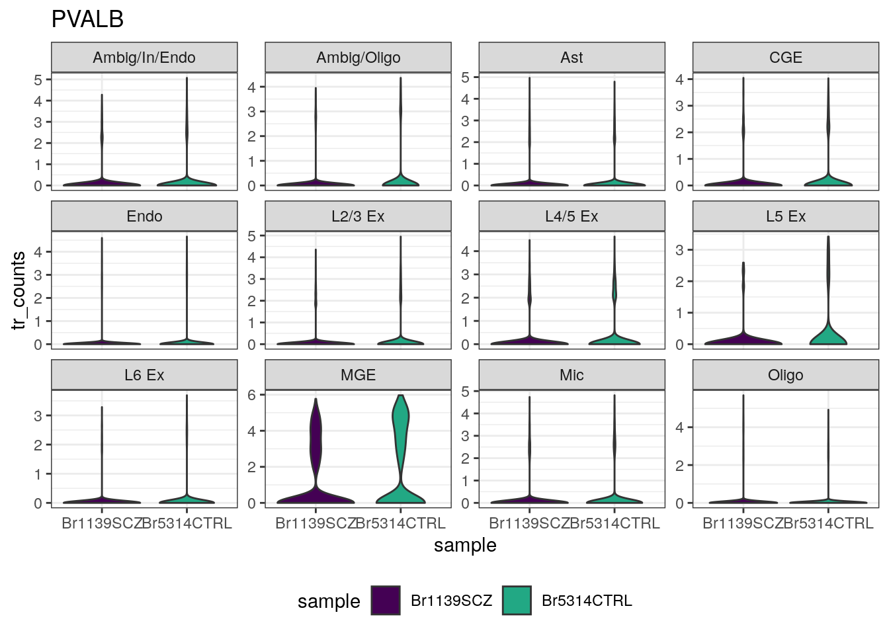
Summary tables of normalized expression by cell type and sample.
use_combined_data(scz_spatial, use = "summary", gene_name = "PVALB")Joining with `by = join_by(libname)`
Joining with `by = join_by(libname)`
`summarise()` has grouped output by 'annot'. You can override using the
`.groups` argument.# A tibble: 24 × 7
# Groups: annot [12]
annot sample min_exp max_exp avg_exp median_exp var_exp
<chr> <chr> <dbl> <dbl> <dbl> <dbl> <dbl>
1 Ambig/In/Endo Br1139SCZ 0 4.28 0.154 0 0.398
2 Ambig/In/Endo Br5314CTRL 0 5.07 0.205 0 0.589
3 Ambig/Oligo Br1139SCZ 0 3.95 0.106 0 0.299
4 Ambig/Oligo Br5314CTRL 0 4.36 0.205 0 0.642
5 Ast Br1139SCZ 0 4.96 0.134 0 0.345
6 Ast Br5314CTRL 0 4.79 0.187 0 0.468
7 CGE Br1139SCZ 0 4.05 0.117 0 0.267
8 CGE Br5314CTRL 0 4.03 0.243 0 0.577
9 Endo Br1139SCZ 0 4.60 0.0617 0 0.181
10 Endo Br5314CTRL 0 4.66 0.106 0 0.330
11 L2/3 Ex Br1139SCZ 0 4.35 0.122 0 0.276
12 L2/3 Ex Br5314CTRL 0 4.95 0.224 0 0.569
13 L4/5 Ex Br1139SCZ 0 4.48 0.196 0 0.441
14 L4/5 Ex Br5314CTRL 0 4.63 0.331 0 0.738
15 L5 Ex Br1139SCZ 0 2.59 0.0866 0 0.183
16 L5 Ex Br5314CTRL 0 3.42 0.262 0 0.625
17 L6 Ex Br1139SCZ 0 3.28 0.0544 0 0.124
18 L6 Ex Br5314CTRL 0 3.69 0.0895 0 0.228
19 MGE Br1139SCZ 0 5.77 1.21 0 3.12
20 MGE Br5314CTRL 0 5.97 1.89 0 4.75
21 Mic Br1139SCZ 0 4.73 0.160 0 0.419
22 Mic Br5314CTRL 0 4.81 0.242 0 0.665
23 Oligo Br1139SCZ 0 5.69 0.0994 0 0.348
24 Oligo Br5314CTRL 0 4.92 0.101 0 0.295use_combined_data(scz_spatial_tr, use = "violin", gene_name = "MBP")Joining with `by = join_by(libname)`
Joining with `by = join_by(libname)`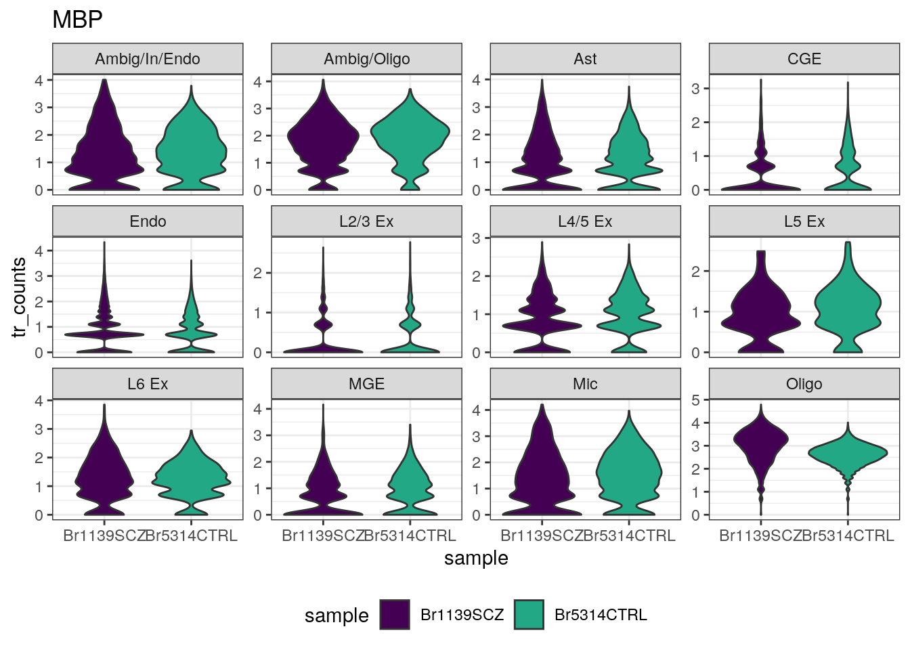
use_combined_data(scz_spatial_tr, use = "summary", gene_name = "MBP")Joining with `by = join_by(libname)`
Joining with `by = join_by(libname)`
`summarise()` has grouped output by 'annot'. You can override using the
`.groups` argument.# A tibble: 24 × 7
# Groups: annot [12]
annot sample min_exp max_exp avg_exp median_exp var_exp
<chr> <chr> <dbl> <dbl> <dbl> <dbl> <dbl>
1 Ambig/In/Endo Br1139SCZ 0 4.01 1.30 1.10 0.964
2 Ambig/In/Endo Br5314CTRL 0 3.78 1.36 1.39 0.725
3 Ambig/Oligo Br1139SCZ 0 4.06 1.74 1.79 0.713
4 Ambig/Oligo Br5314CTRL 0 3.71 1.82 1.95 0.630
5 Ast Br1139SCZ 0 3.99 1.08 1.10 0.844
6 Ast Br5314CTRL 0 3.74 1.14 1.10 0.658
7 CGE Br1139SCZ 0 3.26 0.444 0 0.397
8 CGE Br5314CTRL 0 3.18 0.601 0.693 0.407
9 Endo Br1139SCZ 0 4.33 0.953 0.693 0.604
10 Endo Br5314CTRL 0 3.61 0.848 0.693 0.474
11 L2/3 Ex Br1139SCZ 0 2.64 0.292 0 0.250
12 L2/3 Ex Br5314CTRL 0 2.77 0.370 0 0.275
13 L4/5 Ex Br1139SCZ 0 2.89 0.885 0.693 0.391
14 L4/5 Ex Br5314CTRL 0 2.83 1.00 1.10 0.343
15 L5 Ex Br1139SCZ 0 2.48 0.919 0.693 0.375
16 L5 Ex Br5314CTRL 0 2.71 1.05 1.10 0.355
17 L6 Ex Br1139SCZ 0 3.85 1.27 1.10 0.625
18 L6 Ex Br5314CTRL 0 2.94 1.24 1.39 0.387
19 MGE Br1139SCZ 0 4.16 0.797 0.693 0.581
20 MGE Br5314CTRL 0 3.40 0.959 1.10 0.513
21 Mic Br1139SCZ 0 4.20 1.35 1.39 1.11
22 Mic Br5314CTRL 0 3.97 1.49 1.61 0.831
23 Oligo Br1139SCZ 0 4.79 2.99 3.09 0.515
24 Oligo Br5314CTRL 0 4.01 2.59 2.64 0.208use_combined_data(scz_spatial_tr, use = "violin", gene_name = "PVALB")Joining with `by = join_by(libname)`
Joining with `by = join_by(libname)`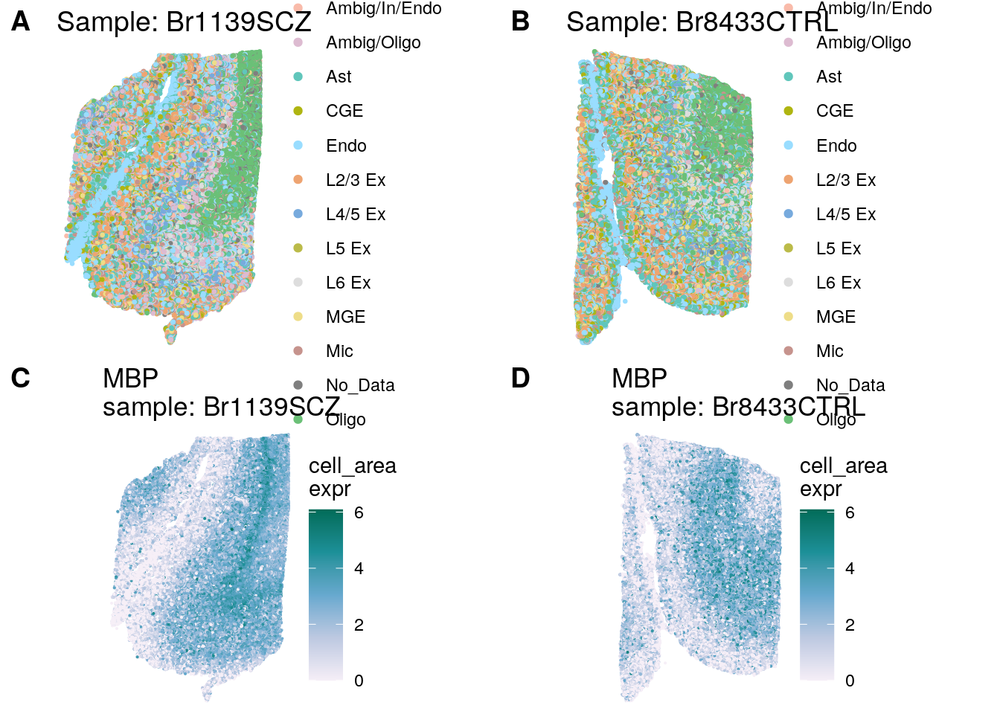
use_combined_data(scz_spatial_tr, use = "summary", gene_name = "PVALB")Joining with `by = join_by(libname)`
Joining with `by = join_by(libname)`
`summarise()` has grouped output by 'annot'. You can override using the
`.groups` argument.# A tibble: 24 × 7
# Groups: annot [12]
annot sample min_exp max_exp avg_exp median_exp var_exp
<chr> <chr> <dbl> <dbl> <dbl> <dbl> <dbl>
1 Ambig/In/Endo Br1139SCZ 0 1.79 0.0443 0 0.0353
2 Ambig/In/Endo Br5314CTRL 0 2.30 0.0534 0 0.0509
3 Ambig/Oligo Br1139SCZ 0 1.39 0.0274 0 0.0207
4 Ambig/Oligo Br5314CTRL 0 1.61 0.0530 0 0.0468
5 Ast Br1139SCZ 0 2.56 0.0347 0 0.0278
6 Ast Br5314CTRL 0 1.79 0.0345 0 0.0264
7 CGE Br1139SCZ 0 1.61 0.0308 0 0.0225
8 CGE Br5314CTRL 0 1.39 0.0436 0 0.0316
9 Endo Br1139SCZ 0 1.61 0.0164 0 0.0132
10 Endo Br5314CTRL 0 1.79 0.0274 0 0.0234
11 L2/3 Ex Br1139SCZ 0 1.61 0.0281 0 0.0208
12 L2/3 Ex Br5314CTRL 0 1.95 0.0446 0 0.0356
13 L4/5 Ex Br1139SCZ 0 1.79 0.0477 0 0.0364
14 L4/5 Ex Br5314CTRL 0 1.95 0.0564 0 0.0408
15 L5 Ex Br1139SCZ 0 0.693 0.0159 0 0.0109
16 L5 Ex Br5314CTRL 0 1.10 0.0472 0 0.0343
17 L6 Ex Br1139SCZ 0 1.10 0.0131 0 0.00916
18 L6 Ex Br5314CTRL 0 1.10 0.0191 0 0.0138
19 MGE Br1139SCZ 0 3.26 0.459 0 0.580
20 MGE Br5314CTRL 0 3.18 0.726 0 0.911
21 Mic Br1139SCZ 0 2.30 0.0454 0 0.0373
22 Mic Br5314CTRL 0 1.79 0.0615 0 0.0503
23 Oligo Br1139SCZ 0 2.83 0.0273 0 0.0273
24 Oligo Br5314CTRL 0 1.95 0.0252 0 0.0214 Summary
Synopsis
![Diagram showing the process of working with Xenium data and the decision points along the way. The process begins by preparing samples for the Xenium Analyzer. Will tissues be fresh frozen (FF) or formalin fixed and paraffin embedded. What is tissue quality like? After processed with the Xenium analyzer, which data files do you need to work with and what do the files contain? The case study starts here where you receive the data. You also will need to consider which tool or tools to use and possibly wrangle the data in order to import it. Researchers then explore the data and perform quality control. During that exploration process, researchers must decide on appropriate filter thresholds for library size and number of features in cells. Researchers may need to remove irrelevant genes. Following quality control, researchers transform their data, performing normalization to account for technical artifacts. Multiple normalization methods are available and researchers need to choose the one most appropriate for their data and downstream application. After this researchers visualize spatial patterns. It's best for them to confirm that these patterns are observed across multiple sets of samples rather than an artifact of sample preparation. Researchers then choose downstream analyses to further look at global and statistical summaries of their data.](index_files/figure-html//19UCuIN3SfWj_gwQ9B9-OpJTin2dc9TriHRyDP8_SkEw_h4573fa7d1816554a_1_32.png)
Summary Plot
Continued Learning
Common Next Steps
Several functions provided by spatialGE can be used for downstream
- STgradient
- STenrich
- STdiff
- SThet
Having them compare which cells were filtered out between our process and the process of the authors.
- First use the list of IDs to compare with the list of IDs the authors report
- Second recreate the quilt plot supplemental figure
Advancement Exercises
Beginner
Use the pseudobulk_samples(), pseudobulk_heatmap(), and pseudobulk_dim_plot() functions to perform a principal component analysis (PCA) and create PCA plot(s) of the samples. What about the samples seems to explain the variance among them?
Code for performing PCA
Hint
Consider using:
- the
max_var_genesargument with thepseudobulk_samples()function (since the Xenium panel has a limited number of genes) - the
plot_metaargument of thepseudobulk_dim_plot()function to color the sample points on the PCA plot using metadata information about the samples stored as a column in data frame in the@sample_metaslot. - the
pseudobulk_dim_plot()function more than once with differentplot_metaarguments
scz_spatial <- pseudobulk_samples(scz_spatial, max_var_genes = 150) #decreased compared to the default since the Xenium panel is based on a lower number of genes than say Visium data
pseudobulk_heatmap(scz_spatial)
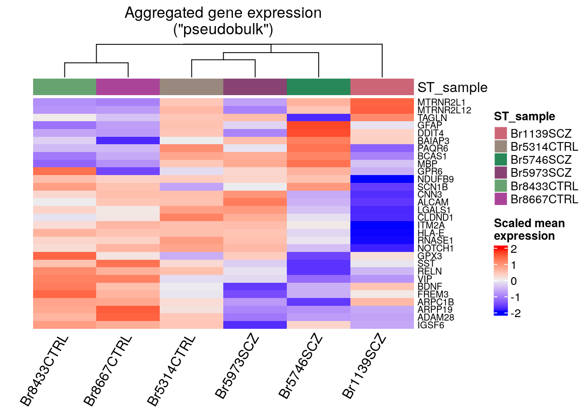
pseudobulk_dim_plot(scz_spatial, plot_meta = "Sex")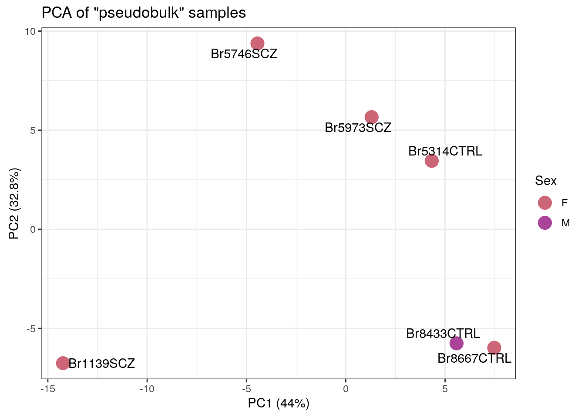
Intermediate
Bringing over the spatial domains from Visium data following a similar technique the authors did and re-looking at the quilt plots with that annotation rather than the cell type.
Advanced
Trying to run a spatialGE function for looking at spatial gene expression.
Additional Information
Helpful Links
Glossary
| Term | Definition |
| Barcodes | Cell identifiers. Typically IDs of random letters and numbers assigned to cells in single-cell or spatial experiments. |
| Centroid | The point corresponding to the geometric center of a shape. Has an x- and y- coordinate associated with it. Can be found if you know the vertices of a polygon. |
| Clustering | Grouping similar data points together into distinct sets based on shared qualities or data patterns. Specifically, the process of organizing unlabeled data points into groups such that data points in the same group are more similar to each other than to data points in other groups. Some way to compute distance or similarity is required for clustering methods. |
| Coefficient | Represents proportional relationship between variables. Within regression, quantifies how much the dependent variable changes when the independent variable changes by one unit. |
| Cohort | Research participants within the same study. |
| Color palette | Specific combination of colors used together within a visualization to represent data. May be a set of discrete colors from different color families or instead a range of different shades within a color family. |
| Compressed | A way to store data so that it requires less space. Due to the way that it is stored, it's less readable and often needs to be decompressed in order to visually inspect it or work with it. |
| Coordinates | A set of two numbers (x- and y-) used to represent a specific location on the two-dimensional Cartesian coordinate plane, specifically the x-axis communicates how far to move horizontally while the y-value communciates how far to move vertically from the origin of the plane (0,0). This can be visualized by drawing a vertical line from the x-coordinate on x-axis and a horizontal line from the y-coordinate on the y-axis and seeing where they intersect. |
| Counts | The quantitative measurement of RNA molecules detected for specific genes within a spatial location (e.g., spot or cell). May be detected by sequencing or fluorescent imaging within Spatial Transcriptomics experiments. Often represented in a matrix where rows represent counts for a specific gene and columns represent counts for a specific cell. |
| Deconvolution | A computational method used to estimate the types and proportions of individual cells present within a capture location that has a mixture of cells rather than representing a single-cell. Necessary for spatial technologies like Visium with their "spots", but generally can be used for any technology where there a mixture of cells is represented within the capture area. |
| Differential Gene Expression | The difference in expression of a gene between samples or cases. Differential expression is typically thought of as a difference in abundance or amount of expression but may also be a difference in what cell types a gene is expressed in or where a gene is expressed spatially within a tissue. |
| Directories | Folders in a file system. |
| Distribution | A mathematical description of the possible values of a random variable and how often each occurs. |
| Dorsolateral prefrontal cortex | dlPFC. An area of the prefrontal cortex in the frontal lobe of the brain. Situated towards the top and side of the prefrontal cortex. Involved in executive functioning and cognitive control, contributing to working memory, divergent thinking, executive attention, and decision making. Found to be central to cognitive dysfunction in schizophrenia. |
| Doublet | A cell segmentation boundary that contains signals or mRNA counts from two or more distinct cells rather than just one cell -- the result of an error in the image segmentation process. |
| Droplet | In single-cell sequencing, droplets are used to physically separate cells prior to sequencing. |
| Enrichment | Overrepresentation of something (e.g., a gene or set of genes) compared to expectation, other sets, or a background set. |
| Features | Used to describe the rows in a gene count matrix. Since genes correspond to the rows, the term features is often used interchangeably with "genes". |
| Filtering | The process of removing low quality or irrelevant data from a biological dataset. Often what will be filtered is identified during quality control. |
| Formalin-fixed paraffin-embedded | FFPE. A biological sample is acquired through either surgial resection or biopsy and fixed with formalin to arrest cellular processes, crosslink proteins, and "fix" tissues. Then dehydration, clearing, and paraffin infiltration remove water and provide structural support to the sample before embedding the tissue in a paraffin block that can be sectioned or archived for long-term storage without ultra cold freezers. This method preserves tissue structure and morphological details though nucleic acids are often fragmented in the fixation process. |
| Fresh frozen | FF. Fresh frozen samples are biological tissue samples. Typically a sample is acquired through either surgical resection or biopsy and then rapidly frozen (without prior chemical fixation) using liquid nitrogen or dry ice to arrest cellular processes, and stored at ultra low temperatures until sectioning and further sample preparation steps can be performed. This method preserves cellular architecture and the quality nucleic acids for later analysis though overall morphological details may not be preserved. Additionally, any water inside the tissue will turn into ice crystals, distorting structure |
| GEO | Gene Expression Omnibus. A database storing high throughput gene expression datasets deposited by researchers. |
| GUI | Graphical User Interface. May be a web interface or a local application. |
| Guide | Another term for a legend in a plot. |
| Histology | The microscopic structure of a biological tissue, often visualized with a microscope and tissue staining to enhance contrast of structure. |
| Hypothesis generation | The process of formulating new ideas or testable answers for a research question by exploring data and other related knowledge or results within the field. |
| Image-based technologies | Methods that are used to directly visualize and map RNA transcripts using labeled fluorescent probes that bind directly to the transcripts within intact tissue sections. Automated cycles of high-resolution microscopy rather than sequencing methods are used to detect the hybridization of probes to the transcripts. These methods typically offer high cellular resolution but low molecular resolution only being able to be utilized for a limited panel of genes for each sample. |
| Index | To use a location/coordinate, name, or combination of coordinates or names to extract a specific value from a vector, matrix, or data frame. |
| laminar domains | Functional and structural anatomical subdivisions or layers which are distinct, spanning the brain tissue. |
| lapply | A function from base R that allows the user to loop through an input, performing a specified function on each input, returning the results in a list. |
| libname | IDs assigned to "libraries". Used interchangeably with "barcodes" by spatialGE. |
| log transformation | A data transformation typically used for raw counts data because it is heavily right-skewed due to data sparsity. A pseudocount of one is added to raw values and then a logarithm function is applied, resulting in a more bell-shaped normal distribution by pulling far away data closer to the rest of the data. |
| Loop | Automating a process by iterating over a set of inputs and executing the same code for each item in set (or until a stop condition is met). |
| Matrix | A two-dimensional or rectangular structure with horizontal rows and vertical columns that can be used to store related data (like cell-specific gene counts) in entries (where each row and column intersects). |
| Metadata | Descriptive information describing other data. Descriptions may include how or when that data was generated, source organisms, associated patient IDs, or demographic information. |
| Mitochondrial reads | Reads from a sequencing experiment that map to the mitochondrial genome of cells rather than the nuclear genome. |
| Morphology | The physical appearance within a biological sample like cells within a tissue. Histological images contain morphological information. Morphology images can represent the same tissue as a histological image, but they don't use the stains that histology does to visualize the tissue. |
| mRNA | Messenger RNA, a single-stranded nucleic acid which transfers genetic information. Transcribed from DNA, it will be translated into protein. |
| Multicellular | More than one cell is represented. |
| Neurotypical | A term used to describe donors / their brains based on neurological characterisics -- saying they align with the typical expectations for a population. Neurotypical refers to "control" in this case. |
| Package | A bundled collection of code or software designed to perform specific tasks. Users load these packages and consult their documentation in order to use functions for specific tasks. |
| Panel | A specific, curated set of molecular targets such as genes or transcripts. |
| Parquet | A file type that is used to efficiently store large amounts of data because it uses a column-by-column approach. |
| PCA | Principal component analysis. A dimensionality reduction method that finds principal components or orthogonal components that explain variation within the original dataset. |
| Personally Identifiable Information | Data unique to an individual person that can be used to distinguish their identity, including full names, Social Security numbers, contact information, etc.; abbreviated as "PII". |
| PMI | Postmortem Interval. The amount of time between the passing of a donor and when a tissue sample is taken from the donor. This interval of time is typically reported within hours but may be reported in another unit representing measurement of time. Shorten post mortem intervals correlate with higher tissue quality, minimizing the time for natural degradation to occur. |
| Polygon | A multi-sided two-dimensional shape. Each side is a straight line whose endpoints are each connected to an endpoint of another side. Circles or ovals can be approximated by a polygon with many sides. |
| Postmortem samples | Samples collected after the death of the donor. |
| Protected Health Information | A subset of PII that includes any health information that can identify an individual that is regulated by HIPAA, including full name, contact information, medical records, health insurance information, biometric elements, etc.; abbreviated as "PHI". |
| Pseudobulk | A data transformation where counts from single cells are aggregated and considered in bulk, typically by summing counts across all cells of the same cell type within a sample (though counts can be averaged alternatively). Pseudobulks mirror how the data would look if that specific cell population had been isolated and sequenced using a traditional bulk experiment. |
| Quality Control | The process of exploring and evaluating raw biological data to detect technical artifacts, errors, low quality data, biases, etc prior to downstream analysis in order to promote higher confidence results. |
| Quilt plot | A type of plot that is used to visualize the two-dimensional spatial distribution of gene expression or cell types/clusters within a sample, mirroring the physical architecture of the tissue sample. Colors are used to represent the expression values or cell type/domain classes. Can be thought of as a type of heatmap without any clustering. |
| R-squared | Statistical measure relating to the proportion of variability within the dependent varaible that can be explained by the independent variable and the relationship between the variables. Often used as a measure of effect size. Also known as the "coefficient of determination". |
| Random seed | A number provided as an initial starting value for random number generators, promoting the repeatability and reproducibility of random processes. |
| Repeatability | The ability for the same researcher to run the same analysis on the same data and get the same results. |
| Reproducible | A term used to describe research or a process that a new researcher can follow, running the same analysis on the same data and getting the same results as the original researcher.. |
| Resolution | Refers to the smallest unit of change or observation scale that can reliably be detected or measured. High resolution means that a scale has fine intervals and small differences can be observed. Low resolution means that a scale has broader intervals and small variations may be missed (e.g., harder to differentiate between individual cells or measure all molecules). |
| RIN | RNA Integrity Number. A measure of sample quality determined by an automated software algorithm. Found by analyzing the electrophoretic separation of RNA molecules according to size, processing the resulting signal traces (electropherograms which representing how much of RNA of different sizes is present in samples) to evaluate and rank the signal features and combinations of features according to their predictive information content. Returns a value representing the overal level of RNA degradation within a sample on a standardized 1-10 scale. |
| Schizophrenia | Chronic neuropsychiatric disorder characterized by a spectrum of symptoms impacting a person's thoughts, emotions, and behavior. Symptoms are generally classified as positive, negative, or cognitive. |
| Segmentation | Process of inferring individual cell boundaries from tissue images, nuclear or other cell surface and interior marker staining, and transcript coordinates. Some algorithms if only provided nuclear staining first segment nuclear boundaries and expand them to approximate the cell boundaries. Others use the combination of stains to first find cell boundaries. After inferring cell boundaries, observed transcripts can be assigned to cells. |
| Sequencing | A laboratory technique that extracts and analyzes the genetic material from a sample. |
| Sequencing-based technologies | Methods that utilize microscopic regions or spots on specialized slides to sequence intact tissues, retaining the original physical location of observed RNA molecules within a tissue sample. These methods have high molecular resolution but low cellular resolution because they sequence the whole transcriptome rather than targeting a limited set of genes. However, the spots are not necessarily single-cells and data must be deconvoluted. |
| Slope | Coefficient within a linear model that represents both the steepness and direction of the relationship between the independent and dependent variable. |
| Sparse | Term used to describe the results from a single-cell or spatial transcriptomics experiment. Typically means that an experiment is low coverage, possibly because a given cell has a limited number of molecules that are being expressed at any given time. Within a data matrix, this looks like a lot of zeros. A sparse-matrix representation, on the other hand, omits these zeros, storing only the location of and values of non-zero data (though displays of this data may include periods instead of zeros if inspected). This sparse representation is used to reduce the overall storage size needed for the data. |
| Spatial Transcriptomics | Spatial Transcriptomics refers to molecular methods used to measure gene expression at or near single-cell resolution, reporting where observed transcripts are physically located within the source tissue, preserving spatial context. |
| Specialized cell | A highly differentiated cell that serves a specific purpose within a tissue. It may have a unique structure (physical shape or size) compared to other cells. It will express specific genes that other cells may not. |
| Spot | Refers to the regions across a tissue section that sequencing-based methods use to capture spatially-resolved data. Spots often represent 10s to 100s of cells (e.g., multicellular) rather than single-cells. Each spot has a defined set of x- and y- coordinates on the slide used to capture data, relating captured data to physical locations within the tissue. |
| STlist | An S4 object that the spatialGE program uses to store spatially-resolved expression data for one or multiple samples. Utilizes slots for various aspects of the data and named lists within each slot to store data specific to each sample. |
| Subcellular | Represents part of a cell rather than a whole, single cell. |
| Transcriptome | Complete collection of transcripts produced by the genome in a specific cell, tissue, or organism. |
| Vertex | Where the endpoints of two edges meet in a polygon. |
| Violin plot | A plot used to visualize distributions of numerical variables. Because they visualize the density of data across possible values of the variable, they may resemble violins. Useful for comparing the variable across different biological groups. |
| Visium | A popular sequencing-based technology for generating spatially-resolved expression data. |
| Volcano plot | A scatter plot that plots data points according to the observed magnitude of change on the x-axis and the statistical significance on the y-axis. Typically one point represents one gene, and the values are found by comparing the expression of that gene across different experimental conditions or clinical cases. Points are often colored differently based on whether the gene is upregulated (over-expressed) or downregulated (under-expressed) in a specific case relative to a conrol and whether the observed change reached pre-defined thresholds for statistical significance. |
| Xenium | A popular image-based technology for geenrating spatially-resolved expression data. |
References
Andrews, Mark. 2021. “Iterations in R with Lapply (Etc) and Purrr Functionals.” July 6, 2021. https://www.mjandrews.org/notes/functionals/.
Grases, Daniela, and Eduard Porta-Pardo. 2026. “A Practical Guide to Spatial Transcriptomics: Lessons from over 1000 Samples.” Trends in Biotechnology 44 (5): 1230–42. https://doi.org/10.1016/j.tibtech.2025.08.020.
Huuki-Myers, Louise A., Abby Spangler, Nicholas J. Eagles, Kelsey D. Montgomery, Sang Ho Kwon, Boyi Guo, Melissa Grant-Peters, et al. 2024. “A Data-Driven Single-Cell and Spatial Transcriptomic Map of the Human Prefrontal Cortex.” Science 384 (6698): eadh1938. https://doi.org/10.1126/science.adh1938.
Kwon, Sang Ho, Boyi Guo, Cindy Fang, Madhavi Tippani, Svitlana V. Bach, Ryan A. Miller, Sarah E. Maguire, et al. 2026. “Mapping Spatially Organized Molecular and Genetic Signatures of Schizophrenia Across Multiple Scales in Human Prefrontal Cortex,” February, 2026.02.16.706214. https://doi.org/10.64898/2026.02.16.706214.
Lim, Hyun Ju, Ye Wang, Anton Buzdin, and Xinmin Li. 2025. “A Practical Guide for Choosing an Optimal Spatial Transcriptomics Technology from Seven Major Commercially Available Options.” BMC Genomics 26 (January): 47. https://doi.org/10.1186/s12864-025-11235-3.
Ospina, Oscar E., Roberto Manjarres-Betancur, Guillermo Gonzalez-Calderon, Alex C. Soupir, Inna Smalley, Kenneth Y. Tsai, Joseph Markowitz, et al. 2025. “spatialGE Is a User-Friendly Web Application That Facilitates Spatial Transcriptomics Data Analysis.” Cancer Research 85 (5): 848–58. https://doi.org/10.1158/0008-5472.CAN-24-2346.
Ospina, Oscar E, Christopher M Wilson, Alex C Soupir, Anders Berglund, Inna Smalley, Kenneth Y Tsai, and Brooke L Fridley. 2022. “spatialGE: Quantification and Visualization of the Tumor Microenvironment Heterogeneity Using Spatial Transcriptomics.” Bioinformatics 38 (9): 2645–47. https://doi.org/10.1093/bioinformatics/btac145.
Session Info
devtools::session_info()─ Session info ───────────────────────────────────────────────────────────────
setting value
version R version 4.3.2 (2023-10-31)
os Ubuntu 22.04.4 LTS
system x86_64, linux-gnu
ui X11
language (EN)
collate en_US.UTF-8
ctype en_US.UTF-8
tz Etc/UTC
date 2026-10-30
pandoc 3.1.1 @ /usr/local/bin/ (via rmarkdown)
─ Packages ───────────────────────────────────────────────────────────────────
package * version date (UTC) lib source
abind 1.4-8 2024-09-12 [1] CRAN (R 4.3.2)
arrow * 25.0.1 2026-08-23 [1] CRAN (R 4.3.2)
askpass 1.2.0 2023-09-03 [1] RSPM (R 4.3.0)
assertthat 0.2.1 2019-03-21 [1] RSPM (R 4.3.0)
backports 1.4.1 2021-12-13 [1] RSPM (R 4.3.0)
Biobase * 2.62.0 2023-10-24 [1] Bioconductor
BiocGenerics * 0.48.1 2023-11-01 [1] Bioconductor
bit 4.0.5 2022-11-15 [1] RSPM (R 4.3.0)
bit64 4.0.5 2020-08-30 [1] RSPM (R 4.3.0)
broom 1.0.12 2026-01-27 [1] CRAN (R 4.3.2)
cachem 1.0.8 2023-05-01 [1] RSPM (R 4.3.0)
car 3.1-5 2026-02-03 [1] CRAN (R 4.3.2)
carData 3.0-6 2026-01-30 [1] CRAN (R 4.3.2)
chromote 0.3.1 2024-08-30 [1] CRAN (R 4.3.2)
circlize 0.4.16 2024-02-20 [1] RSPM (R 4.3.0)
class 7.3-22 2023-05-03 [2] CRAN (R 4.3.2)
classInt 0.4-11 2025-01-08 [1] CRAN (R 4.3.2)
cli 3.6.2 2023-12-11 [1] RSPM (R 4.3.0)
clue 0.3-65 2023-09-23 [1] RSPM (R 4.3.0)
cluster 2.1.4 2022-08-22 [2] CRAN (R 4.3.2)
codetools 0.2-19 2023-02-01 [2] CRAN (R 4.3.2)
colorblindr * 0.1.0 2026-10-02 [1] Github (clauswilke/colorblindr@90d64f8)
colorspace * 2.1-0 2023-01-23 [1] RSPM (R 4.3.0)
ComplexHeatmap 2.18.0 2023-10-24 [1] Bioconductor
cowplot 1.2.0 2025-07-07 [1] CRAN (R 4.3.2)
crayon 1.5.2 2022-09-29 [1] RSPM (R 4.3.0)
curl 5.2.0 2023-12-08 [1] RSPM (R 4.3.0)
data.table 1.15.0 2024-01-30 [1] RSPM (R 4.3.0)
DBI 1.2.2 2024-02-16 [1] RSPM (R 4.3.0)
devtools 2.4.5 2022-10-11 [1] RSPM (R 4.3.0)
digest 0.6.34 2024-01-11 [1] RSPM (R 4.3.0)
doParallel 1.0.17 2022-02-07 [1] RSPM (R 4.3.0)
dplyr * 1.1.4 2023-11-17 [1] RSPM (R 4.3.0)
e1071 1.7-17 2025-12-18 [1] CRAN (R 4.3.2)
ellipsis 0.3.2 2021-04-29 [1] RSPM (R 4.3.0)
evaluate 0.23 2023-11-01 [1] RSPM (R 4.3.0)
fansi 1.0.6 2023-12-08 [1] RSPM (R 4.3.0)
farver 2.1.1 2022-07-06 [1] RSPM (R 4.3.0)
fastmap 1.1.1 2023-02-24 [1] RSPM (R 4.3.0)
forcats * 1.0.0 2023-01-29 [1] RSPM (R 4.3.0)
foreach 1.5.2 2022-02-02 [1] RSPM (R 4.3.0)
Formula 1.2-5 2023-02-24 [1] CRAN (R 4.3.2)
fs 1.6.3 2023-07-20 [1] RSPM (R 4.3.0)
generics 0.1.3 2022-07-05 [1] RSPM (R 4.3.0)
GEOquery * 2.70.0 2023-10-24 [1] Bioconductor
GetoptLong 1.0.5 2020-12-15 [1] RSPM (R 4.3.0)
ggforce 0.4.2 2024-02-19 [1] RSPM (R 4.3.0)
ggplot2 * 4.0.2 2026-02-03 [1] CRAN (R 4.3.2)
ggpolypath 0.3.0 2023-09-25 [1] RSPM (R 4.3.0)
ggpubr * 0.6.3 2026-02-24 [1] CRAN (R 4.3.2)
ggrepel 0.9.8 2026-03-17 [1] CRAN (R 4.3.2)
ggsignif 0.6.4 2022-10-13 [1] CRAN (R 4.3.2)
GlobalOptions 0.1.2 2020-06-10 [1] RSPM (R 4.3.0)
glue 1.7.0 2024-01-09 [1] RSPM (R 4.3.0)
gridExtra 2.3 2017-09-09 [1] CRAN (R 4.3.2)
gtable 0.3.6 2024-10-25 [1] CRAN (R 4.3.2)
here * 1.0.1 2020-12-13 [1] CRAN (R 4.3.2)
hms 1.1.3 2023-03-21 [1] RSPM (R 4.3.0)
htmltools 0.5.9 2025-12-04 [1] CRAN (R 4.3.2)
htmlwidgets 1.6.4 2023-12-06 [1] RSPM (R 4.3.0)
httpuv 1.6.14 2024-01-26 [1] RSPM (R 4.3.0)
httr 1.4.7 2023-08-15 [1] RSPM (R 4.3.0)
IRanges 2.36.0 2023-10-24 [1] Bioconductor
iterators 1.0.14 2022-02-05 [1] RSPM (R 4.3.0)
janitor 2.2.0 2023-02-02 [1] RSPM (R 4.3.0)
jsonlite 1.8.8 2023-12-04 [1] RSPM (R 4.3.0)
KernSmooth 2.23-22 2023-07-10 [2] CRAN (R 4.3.2)
khroma 1.12.0 2024-01-08 [1] RSPM (R 4.3.0)
knitr 1.51 2025-12-20 [1] CRAN (R 4.3.2)
labeling 0.4.3 2023-08-29 [1] RSPM (R 4.3.0)
later 1.3.2 2023-12-06 [1] RSPM (R 4.3.0)
lattice 0.21-9 2023-10-01 [2] CRAN (R 4.3.2)
lifecycle 1.0.4 2023-11-07 [1] RSPM (R 4.3.0)
limma 3.58.1 2023-10-31 [1] Bioconductor
lubridate * 1.9.3 2023-09-27 [1] RSPM (R 4.3.0)
magrittr 2.0.3 2022-03-30 [1] RSPM (R 4.3.0)
MASS 7.3-60 2023-05-04 [2] CRAN (R 4.3.2)
Matrix * 1.6-5 2024-01-11 [1] RSPM (R 4.3.0)
matrixStats 1.2.0 2023-12-11 [1] RSPM (R 4.3.0)
memoise 2.0.1 2021-11-26 [1] RSPM (R 4.3.0)
mime 0.12 2021-09-28 [1] RSPM (R 4.3.0)
miniUI 0.1.1.1 2018-05-18 [1] RSPM (R 4.3.0)
openssl 2.1.1 2023-09-25 [1] RSPM (R 4.3.0)
ottrpal 1.3.0 2024-10-23 [1] Github (jhudsl/ottrpal@2e19782)
patchwork * 1.3.2 2025-08-25 [1] CRAN (R 4.3.2)
pillar 1.9.0 2023-03-22 [1] RSPM (R 4.3.0)
pkgbuild 1.4.3 2023-12-10 [1] RSPM (R 4.3.0)
pkgconfig 2.0.3 2019-09-22 [1] RSPM (R 4.3.0)
pkgload 1.3.4 2024-01-16 [1] RSPM (R 4.3.0)
png 0.1-8 2022-11-29 [1] CRAN (R 4.3.2)
polyclip 1.10-6 2023-09-27 [1] RSPM (R 4.3.0)
polynom 1.4-1 2022-04-11 [1] CRAN (R 4.3.2)
processx 3.8.3 2023-12-10 [1] RSPM (R 4.3.0)
profvis 0.3.8 2023-05-02 [1] RSPM (R 4.3.0)
promises 1.2.1 2023-08-10 [1] RSPM (R 4.3.0)
proxy 0.4-29 2025-12-29 [1] CRAN (R 4.3.2)
ps 1.7.6 2024-01-18 [1] RSPM (R 4.3.0)
purrr * 1.0.2 2023-08-10 [1] RSPM (R 4.3.0)
R.methodsS3 * 1.8.2 2022-06-13 [1] CRAN (R 4.3.2)
R.oo * 1.26.0 2024-01-24 [1] CRAN (R 4.3.2)
R.utils * 2.13.0 2025-02-24 [1] CRAN (R 4.3.2)
R6 2.5.1 2021-08-19 [1] RSPM (R 4.3.0)
RColorBrewer 1.1-3 2022-04-03 [1] RSPM (R 4.3.0)
Rcpp 1.1.1 2026-01-10 [1] CRAN (R 4.3.2)
readr * 2.1.5 2024-01-10 [1] RSPM (R 4.3.0)
remotes 2.5.0 2024-03-17 [1] CRAN (R 4.3.2)
rhdf5 * 2.46.1 2023-11-29 [1] Bioconductor 3.18 (R 4.3.2)
rhdf5filters 1.14.1 2023-11-06 [1] Bioconductor
Rhdf5lib 1.24.2 2024-02-07 [1] Bioconductor 3.18 (R 4.3.2)
rjson 0.2.21 2022-01-09 [1] RSPM (R 4.3.0)
rlang 1.1.7 2026-01-09 [1] CRAN (R 4.3.2)
rmarkdown 2.30 2025-09-28 [1] CRAN (R 4.3.2)
rprojroot 2.0.4 2023-11-05 [1] CRAN (R 4.3.2)
rstatix 0.7.3 2025-10-18 [1] CRAN (R 4.3.2)
S4Vectors 0.40.2 2023-11-23 [1] Bioconductor 3.18 (R 4.3.2)
S7 0.2.1 2025-11-14 [1] CRAN (R 4.3.2)
scales 1.4.0 2025-04-24 [1] CRAN (R 4.3.2)
sessioninfo 1.2.2 2021-12-06 [1] RSPM (R 4.3.0)
sf * 1.1-3 2026-09-11 [1] CRAN (R 4.3.2)
shape 1.4.6.1 2024-02-23 [1] RSPM (R 4.3.0)
shiny 1.8.0 2023-11-17 [1] RSPM (R 4.3.0)
snakecase 0.11.1 2023-08-27 [1] RSPM (R 4.3.0)
spatialGE * 1.2.2 2026-10-01 [1] Github (fridleylab/spatialGE@849c174)
statmod 1.5.0 2023-01-06 [1] RSPM (R 4.3.0)
stringi 1.8.3 2023-12-11 [1] RSPM (R 4.3.0)
stringr * 1.5.1 2023-11-14 [1] RSPM (R 4.3.0)
tibble * 3.2.1 2023-03-20 [1] CRAN (R 4.3.2)
tidyr * 1.3.1 2024-01-24 [1] RSPM (R 4.3.0)
tidyselect 1.2.0 2022-10-10 [1] RSPM (R 4.3.0)
tidyverse * 2.0.0 2023-02-22 [1] RSPM (R 4.3.0)
timechange 0.3.0 2024-01-18 [1] RSPM (R 4.3.0)
tweenr 2.0.3 2024-02-26 [1] RSPM (R 4.3.0)
tzdb 0.4.0 2023-05-12 [1] RSPM (R 4.3.0)
units 1.0-1 2026-03-11 [1] CRAN (R 4.3.2)
urlchecker 1.0.1 2021-11-30 [1] RSPM (R 4.3.0)
usethis 2.2.3 2024-02-19 [1] RSPM (R 4.3.0)
utf8 1.2.4 2023-10-22 [1] RSPM (R 4.3.0)
vctrs 0.6.5 2023-12-01 [1] RSPM (R 4.3.0)
viridisLite 0.4.2 2023-05-02 [1] RSPM (R 4.3.0)
vroom 1.6.5 2023-12-05 [1] RSPM (R 4.3.0)
webshot2 0.1.1 2023-08-11 [1] CRAN (R 4.3.2)
websocket 1.4.2 2024-07-22 [1] CRAN (R 4.3.2)
withr 3.0.2 2024-10-28 [1] CRAN (R 4.3.2)
xfun 0.56 2026-01-18 [1] CRAN (R 4.3.2)
xml2 1.3.6 2023-12-04 [1] RSPM (R 4.3.0)
xtable 1.8-4 2019-04-21 [1] RSPM (R 4.3.0)
yaml * 2.3.8 2023-12-11 [1] RSPM (R 4.3.0)
[1] /usr/local/lib/R/site-library
[2] /usr/local/lib/R/library
──────────────────────────────────────────────────────────────────────────────Acknowledgments
We would like to acknowledge Oscar Ospina, Brooke Fridley, and Boyi Guo for their expert review of this case study.
We would also like to acknowledge the National Institute of General Medical Sciences for funding this work (1R25GM160622).
Icons are from iconpacks.
Avatars are from avataaars.
AI Attribution Statement
This work was primarily human-created. AI was used to make stylistic edits, such as changes to structure, wording, and clarity. AI was prompted for its contributions, or AI assistance was enabled. AI-generated content was reviewed and approved. The following model(s) or application(s) were used: Google Gemini, Microsoft 356 Copilot (GPT-5).
AIA Primarily human, Stylistic edits, Human-initiated, Reviewed, Google Gemini, Microsoft 356 Copilot (GPT-5) v1.0
More information about this AI attribution can be found here.